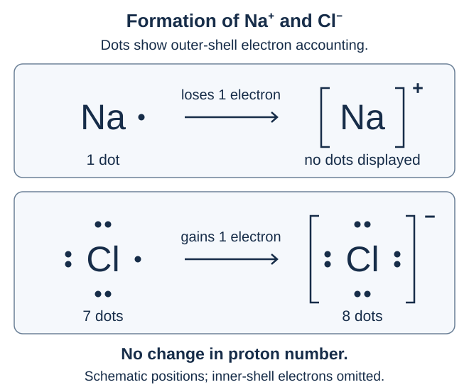
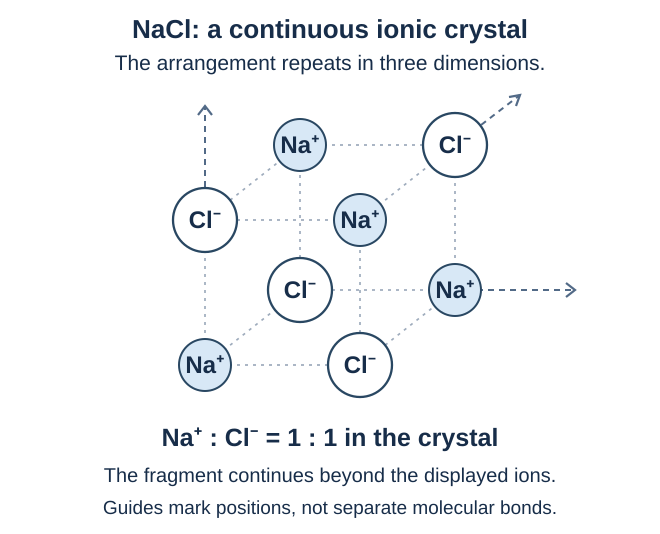
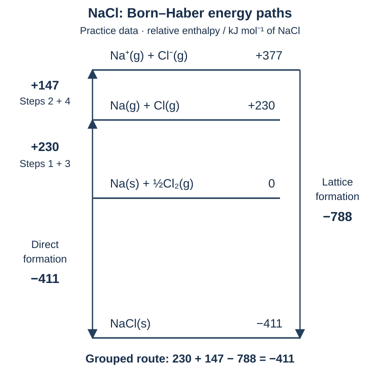
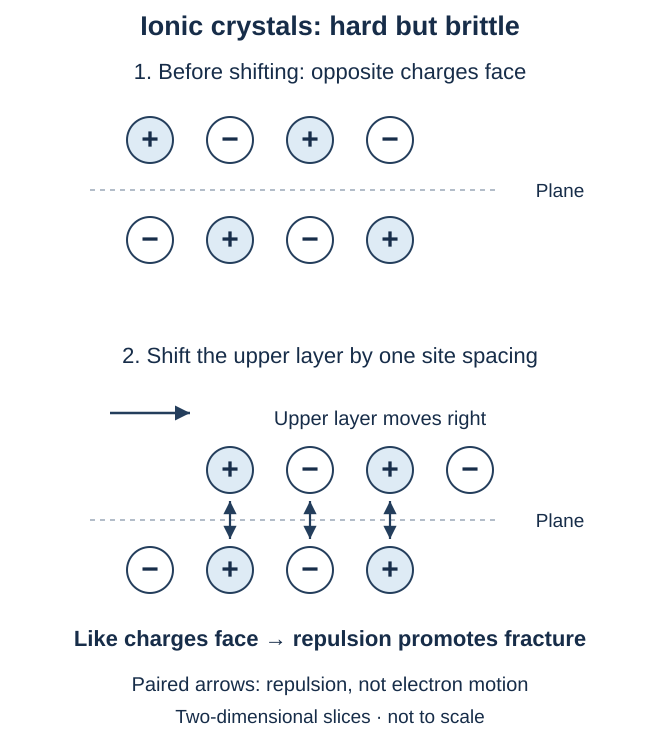
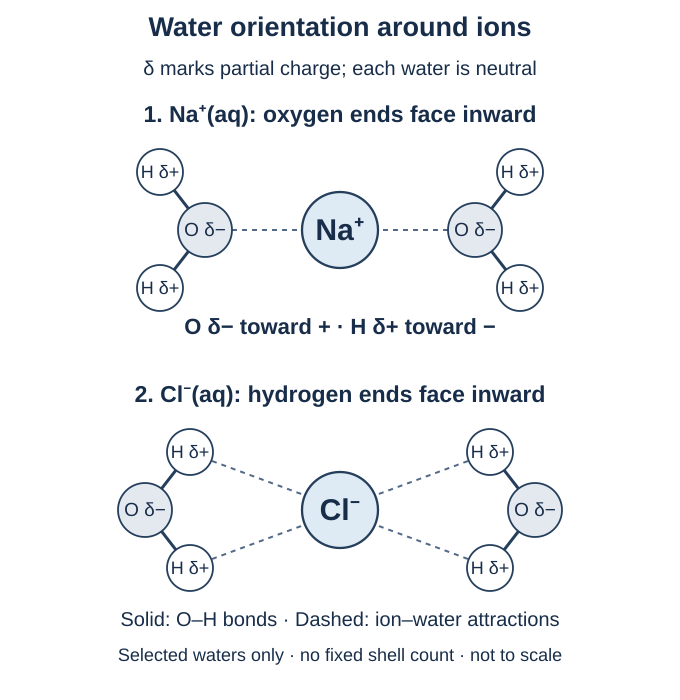

เรื่องนี้ต้องจำ: ไอออนและโครงผลึก → สูตรกับชื่อสาร → พลังงานและบอร์น–ฮาเบอร์ → สมบัติและการละลาย → การตกตะกอนกับสมการไอออนิก · ตอบก่อนเปิดเฉลย มีช่องเขียนหลังทุกข้อย่อย
1. การเกิดไอออนและพันธะไอออนิก
อะตอมเป็นกลางมีจำนวนโปรตอนเท่ากับอิเล็กตรอน เมื่อจำนวนอิเล็กตรอนเปลี่ยนโดยจำนวนโปรตอนเท่าเดิม จะเกิดเป็น ไอออน
- เสียอิเล็กตรอน → ไอออนบวก เพราะเหลืออิเล็กตรอนน้อยกว่าโปรตอน
- รับอิเล็กตรอน → ไอออนลบ เพราะมีอิเล็กตรอนมากกว่าโปรตอน
เครื่องหมายยกกำลังบอกประจุไอออน เช่น Na+ มีประจุ +1, Cl− มีประจุ −1 และ Mg2+ มีประจุ +2 ตัวเลขที่คั่นด้วยจุลภาคในตารางต่อไปนี้บอกจำนวนอิเล็กตรอนในแต่ละชั้น เรียงจากชั้นในออกสู่ชั้นนอก
| อะตอมและการจัดอิเล็กตรอนเป็นชั้น | การเปลี่ยนแปลงและไอออนที่ได้ |
|---|---|
| Na: 2, 8, 1 | เสีย 1 อิเล็กตรอน → Na+: 2, 8 |
| Cl: 2, 8, 7 | รับ 1 อิเล็กตรอน → Cl−: 2, 8, 8 |
| Mg: 2, 8, 2 | เสีย 2 อิเล็กตรอน → Mg2+: 2, 8 |

พันธะไอออนิก คือแรงดึงดูดทางไฟฟ้าระหว่างไอออนบวกกับไอออนลบ เช่น แรงยึดเหนี่ยวระหว่าง Na+ และ Cl− ในผลึกโซเดียมคลอไรด์
การรับ–เสียอิเล็กตรอนเป็นการอธิบายการเกิดไอออน ส่วนชื่อพันธะไอออนิกเรียกแรงที่ยึดเหนี่ยวไอออนเหล่านั้นไว้ด้วยกัน
คำถาม 1 — ตรวจการรับ–เสียอิเล็กตรอน
ก. เมื่อ Na หนึ่งอะตอมกับ Cl หนึ่งอะตอมเกิดเป็น Na+ และ Cl− แต่ละอะตอมเสียหรือรับอิเล็กตรอนกี่ตัว? จำนวนโปรตอนเปลี่ยนหรือไม่?
ข. Mg หนึ่งอะตอมเสียอิเล็กตรอน 2 ตัว หาก Cl แต่ละอะตอมรับได้ 1 ตัว ต้องใช้ Cl กี่อะตอม และได้ไอออนอะไรบ้าง?
ก. Na เสีย 1 ตัว ส่วน Cl รับ 1 ตัว จำนวนโปรตอนไม่เปลี่ยน ทั้งสองยังเป็นธาตุเดิม
ข. ต้องใช้ Cl 2 อะตอม ได้ Mg2+ 1 ไอออนและ Cl− 2 ไอออน ประจุรวมเป็น +2+2(−1)=0 สอดคล้องกับสูตร MgCl2
2. โครงผลึก: สูตรบอกอัตราส่วนของไอออน
ในของแข็งไอออนิก ไอออนบวกและไอออนลบจัดเรียงต่อเนื่องกันทั้งสามมิติเป็น โครงผลึก ไอออนหนึ่งจึงมีแรงยึดเหนี่ยวกับไอออนรอบข้างหลายตัว

สารประกอบไอออนิกในผลึกจึงอธิบายองค์ประกอบด้วย หน่วยสูตร (formula unit) ซึ่งแสดงอัตราส่วนจำนวนเต็มอย่างต่ำของไอออนที่เป็นองค์ประกอบ โดยคงชนิดของไอออนไว้ เช่น
| สูตร | อัตราส่วนจำนวนไอออน |
|---|---|
| NaCl | Na+ : Cl− = 1 : 1 |
| MgCl2 | Mg2+ : Cl− = 1 : 2 |
| Al2O3 | Al3+ : O2− = 2 : 3 |
สูตร NaCl ไม่ได้หมายความว่าผลึกประกอบด้วยโมเลกุล Na–Cl ที่แยกเป็นคู่ ๆ และอัตราส่วนในสูตรไม่ได้บอกว่าแต่ละไอออนมีเพื่อนบ้านเพียงกี่ตัว
สารประกอบไอออนิกไม่จำเป็นต้องมีโลหะเสมอไป เช่น NH4Cl ประกอบด้วยไอออนแอมโมเนียม NH4+ และไอออนคลอไรด์ Cl− ซึ่งยึดเหนี่ยวกันด้วยแรงไฟฟ้า ส่วนภายใน NH4+ อะตอม N ซึ่งคือไนโตรเจน และ H ซึ่งคือไฮโดรเจน ยึดเหนี่ยวกันด้วยพันธะโคเวเลนต์
คำถาม 2 — อ่านสูตรให้สัมพันธ์กับโครงสร้าง
ก. สูตร NaCl บอกอะไรเกี่ยวกับจำนวนไอออน? หมายความว่า Na+ แต่ละตัวจับกับ Cl− เพียงตัวเดียวในผลึกหรือไม่?
ข. NH4Cl ไม่มีธาตุโลหะเป็นองค์ประกอบ เพราะเหตุใดจึงยังจัดเป็นสารประกอบไอออนิก? ภายในสารนี้มีพันธะโคเวเลนต์ด้วยหรือไม่?
ก. บอกอัตราส่วน Na+ ต่อ Cl− เท่ากับ 1:1 ไม่ได้บอกว่าจับกันเพียงคู่เดียว เพราะไอออนเรียงต่อเนื่องในผลึกและยึดเหนี่ยวกับไอออนรอบข้าง
ข. เพราะประกอบด้วย NH4+ และ Cl− ที่ยึดเหนี่ยวกันด้วยแรงไฟฟ้า และมีพันธะโคเวเลนต์ N–H อยู่ภายใน NH4+ ด้วย
3. ประจุและชื่อไอออนที่ต้องใช้
ไอออนอะตอมเดี่ยว ประกอบด้วยอะตอมเดียวที่มีประจุ ส่วน ไอออนหลายอะตอม เป็นกลุ่มอะตอมที่ยึดเหนี่ยวกันและมีประจุรวม ต้องอ่านชื่อ สูตร และประจุของแต่ละไอออนให้สัมพันธ์กัน
สำหรับไอออนอะตอมเดี่ยวที่พบบ่อย โลหะหมู่ 1 ให้ไอออน +1 โลหะหมู่ 2 ให้ไอออน +2 ส่วนอโลหะหมู่ 17 มักให้ไอออน −1 และหมู่ 16 มักให้ไอออน −2 แนวโน้มนี้ไม่ได้ใช้ทำนายประจุของไอออนหลายอะตอมหรือโลหะทุกชนิด ตารางต่อไปนี้เป็นชุดไอออนที่ใช้บ่อยในโจทย์พื้นฐาน
ไอออนบวกอะตอมเดี่ยวที่ใช้บ่อย
| ไอออน | ชื่อ |
|---|---|
| Li+ | ลิเทียมไอออน |
| Na+ | โซเดียมไอออน |
| K+ | โพแทสเซียมไอออน |
| Ag+ | ซิลเวอร์ไอออน (เงิน) |
| Mg2+ | แมกนีเซียมไอออน |
| Ca2+ | แคลเซียมไอออน |
| Sr2+ | สตรอนเชียมไอออน |
| Ba2+ | แบเรียมไอออน |
| Zn2+ | ซิงก์ไอออน (สังกะสี) |
| Al3+ | อะลูมิเนียมไอออน |
ไอออนลบอะตอมเดี่ยวที่ใช้บ่อย
| ไอออน | ชื่อ |
|---|---|
| F− | ฟลูออไรด์ไอออน |
| Cl− | คลอไรด์ไอออน |
| Br− | โบรไมด์ไอออน |
| I− | ไอโอไดด์ไอออน |
| O2− | ออกไซด์ไอออน |
| S2− | ซัลไฟด์ไอออน |
| N3− | ไนไตรด์ไอออน |
| P3− | ฟอสไฟด์ไอออน |
โลหะที่พบไอออนได้หลายประจุ
Fe และ Cu พบไอออนได้หลายประจุ เลขโรมัน I, II, III แทน 1, 2, 3 ตามลำดับ เมื่อนำมาใช้ในชื่อไอออนโลหะอะตอมเดี่ยวต่อไปนี้ จะระบุเลขออกซิเดชันซึ่งเท่ากับประจุของไอออนนั้น จึงต้องระบุให้ชัดว่าเป็นไอออนชนิดใด
| ไอออน | ชื่อ |
|---|---|
| Fe2+ | ไอร์ออน(II) ไอออน — เหล็กประจุ +2 |
| Fe3+ | ไอร์ออน(III) ไอออน — เหล็กประจุ +3 |
| Cu+ | คอปเปอร์(I) ไอออน — ทองแดงประจุ +1 |
| Cu2+ | คอปเปอร์(II) ไอออน — ทองแดงประจุ +2 |
ไอออนหลายอะตอมที่ใช้บ่อย
ไอออนหลายอะตอมมีได้ทั้งประจุบวก เช่น NH4+ และประจุลบ เช่น SO42− ประจุยกกำลังเป็นประจุรวมของทั้งกลุ่ม ไม่ใช่จำนวนอะตอมในกลุ่ม
| ไอออน | ชื่อ |
|---|---|
| NH4+ | แอมโมเนียมไอออน |
| OH− | ไฮดรอกไซด์ไอออน |
| NO3− | ไนเตรตไอออน |
| NO2− | ไนไตรต์ไอออน |
| CO32− | คาร์บอเนตไอออน |
| HCO3− | ไฮโดรเจนคาร์บอเนตไอออน (ไบคาร์บอเนต) |
| SO42− | ซัลเฟตไอออน |
| SO32− | ซัลไฟต์ไอออน |
| PO43− | ฟอสเฟตไอออน |
| CH3COO− | แอซีเตตไอออน |
อ่านเลขห้อยกับเลขยกกำลังแยกกัน: NO3− มี N 1 อะตอมและ O 3 อะตอมต่อไอออน โดยทั้งไอออนมีประจุ −1 ส่วน N3− เป็นไนโตรเจนเพียง 1 อะตอมที่มีประจุ −3 จึงเป็นคนละไอออนกับไนเตรต
ชื่อคล้ายกันแต่ต้องจำสูตรให้ตรง: ไนไตรด์ N3−, ไนไตรต์ NO2−, ไนเตรต NO3−; ซัลไฟด์ S2−, ซัลไฟต์ SO32−, ซัลเฟต SO42− ชื่อที่ลงท้ายคล้ายกันไม่ได้กำหนดจำนวน O เท่ากันทุกตระกูล เช่น ไนเตรตมี O 3 อะตอม แต่ซัลเฟตมี O 4 อะตอม
คำถาม 3 — จำชื่อ สูตร และประจุให้เป็นชุด
ก. เขียนสัญลักษณ์พร้อมประจุของโซเดียมไอออน แคลเซียมไอออน อะลูมิเนียมไอออน และคลอไรด์ไอออน
ข. เขียนสูตรพร้อมประจุของแอมโมเนียมไอออน ซัลเฟตไอออน ฟอสเฟตไอออน และไฮดรอกไซด์ไอออน
ค. เขียนสูตรพร้อมประจุของไนไตรด์ ไนไตรต์ และไนเตรต แล้วอธิบายความหมายของเลขห้อย 3 กับเครื่องหมายยกกำลัง − ใน NO3−
ง. เรียกชื่อ Fe2+, Fe3+, Cu+ และ Cu2+ โดยใช้เลขโรมัน การมีสัญลักษณ์ธาตุเดียวกันแปลว่าประจุต้องเท่ากันหรือไม่?
ก. Na+ ประจุ +1; Ca2+ ประจุ +2; Al3+ ประจุ +3; Cl− ประจุ −1
ข. NH4+ ประจุ +1; SO42− ประจุ −2; PO43− ประจุ −3; OH− ประจุ −1 แอมโมเนียมเป็นไอออนหลายอะตอมที่มีประจุบวก
ค. ไนไตรด์ N3−; ไนไตรต์ NO2−; ไนเตรต NO3− ใน NO3− เลขห้อย 3 บอกว่ามี O 3 อะตอมต่อไอออนหนึ่งไอออน ส่วนเครื่องหมายยกกำลัง − บอกประจุรวม −1 ของทั้งกลุ่ม โดยมี N 1 อะตอม
ง. Fe2+: ไอร์ออน(II) ไอออน; Fe3+: ไอร์ออน(III) ไอออน; Cu+: คอปเปอร์(I) ไอออน; Cu2+: คอปเปอร์(II) ไอออน สัญลักษณ์ธาตุเดียวกันไม่ได้บังคับให้ประจุเท่ากัน ต้องอ่านประจุหรือชื่อที่ระบุ
4. เขียนสูตรจากไอออนอะตอมเดี่ยว
หลักเดียวที่ต้องตรวจทุกสูตร: ประจุรวมเป็นศูนย์ เขียนไอออนบวกก่อน ตามด้วยไอออนลบ แล้วเลือกจำนวนเต็มอย่างต่ำที่ทำให้ประจุบวกกับประจุลบหักล้างกัน เลขห้อยบอกจำนวนไอออนในหน่วยสูตร; ไม่เขียนเลขห้อย 1 และไม่ใส่ประจุรวมบนสูตรสารประกอบที่เป็นกลาง
ตัวอย่าง Al3+ กับ O2−: ใช้ Al3+ 2 ไอออนให้ประจุ +6 และ O2− 3 ไอออนให้ประจุ −6 จึงได้ Al2O3; ตรวจ 2(+3)+3(−2)=0
การไขว้ขนาดประจุเป็นวิธีช่วยเขียน แต่ต้องตรวจและย่อสัดส่วนจำนวนไอออนเสมอ เช่น Ca2+ กับ O2− ใช้อัตราส่วน 1:1 จึงเป็น CaO โดยตรวจ (+2)+(−2)=0
คำถาม 4 — เขียนสูตรแล้วตรวจประจุ
ก. เขียนสูตรสารประกอบจาก Mg2+ กับ N3− และจาก Ca2+ กับ F− พร้อมระบุอัตราส่วนไอออนและตรวจประจุรวมของแต่ละสูตร
ข. เพื่อนใช้ Ca2+ กับ O2− แล้วเขียนสูตร Ca2O2 ควรแก้เป็นสูตรใด? เพราะอะไรจึงไม่ใส่เลขห้อย 1 หรือประจุไอออนบนสูตรสารประกอบนั้น?
ก. Mg3N2: Mg2+:N3− = 3:2 ตรวจ 3(+2)+2(−3)=0; CaF2: Ca2+:F− = 1:2 ตรวจ (+2)+2(−1)=0
ข. แก้เป็น CaO เพราะต้องย่ออัตราส่วน Ca2+:O2− เป็น 1:1 เลขห้อย 1 ละไว้ตามข้อตกลง และสูตรสารประกอบนี้มีประจุรวมศูนย์ จึงไม่เขียนประจุของไอออนแต่ละชนิดบนสูตรรวม
5. เขียนสูตรที่มีไอออนหลายอะตอม
ใช้หลักประจุรวมเป็นศูนย์เช่นเดิม แต่ เก็บสูตรของไอออนหลายอะตอมไว้เป็นกลุ่ม หากต้องใช้กลุ่มนั้นมากกว่า 1 กลุ่ม ให้ใส่วงเล็บแล้วเขียนเลขห้อยนอกวงเล็บ เลขห้อยนี้คูณจำนวนอะตอมทุกชนิดภายในวงเล็บ
| สูตร | ไอออนที่เป็นองค์ประกอบ |
|---|---|
| Ba(OH)2 | Ba2+ 1 ไอออน กับ OH− 2 ไอออน |
| Al2(SO4)3 | Al3+ 2 ไอออน กับ SO42− 3 ไอออน |
| NaNO3 | Na+ 1 ไอออน กับ NO3− 1 ไอออน; ไม่ต้องใส่วงเล็บเมื่อมีเพียงกลุ่มเดียว |
ตัวอย่าง Al2(SO4)3 มี Al 2 อะตอม S 3 อะตอม และ O 12 อะตอมต่อหน่วยสูตร; ตรวจประจุ 2(+3)+3(−2)=0 การย่อสัดส่วนทำที่ จำนวนไอออน โดยไม่เปลี่ยนสูตรภายในไอออน
กรณีที่ต้องระวัง: เปอร์ออกไซด์ไอออนคือ O22− ต่างจากออกไซด์ O2− หากโจทย์ให้ Li+ กับ O22− ต้องใช้ไอออน 2:1 จึงได้ Li2O2 และคงกลุ่ม O2 ไว้
คำถาม 5 — ใช้วงเล็บและคงกลุ่มไอออน
ก. เขียนสูตรจาก Ca2+ กับ NO3− และจาก NH4+ กับ SO42− พร้อมตรวจประจุรวม
ข. Mg3(PO4)2 มี Mg, P และ O อย่างละกี่อะตอมต่อหน่วยสูตร และมีฟอสเฟตไอออนกี่ไอออน?
ค. เมื่อใช้ Li+ กับเปอร์ออกไซด์ O22− สูตรเป็น Li2O2 หรือ LiO? อธิบายเหตุผล
ก. Ca(NO3)2: (+2)+2(−1)=0; (NH4)2SO4: 2(+1)+(−2)=0 ใส่วงเล็บเฉพาะไอออนหลายอะตอมที่ต้องใช้มากกว่า 1 กลุ่ม
ข. Mg 3 อะตอม P 2 อะตอม O 8 อะตอม และมี PO43− 2 ไอออน เลขห้อย 2 นอกวงเล็บคูณทั้ง P และ O
ค. Li2O2 เพราะต้องใช้ Li+ 2 ไอออนต่อ O22− 1 ไอออน ห้ามย่อจนเปลี่ยนสูตรของเปอร์ออกไซด์ไอออน
6. เรียกชื่อสารประกอบไอออนิกทั่วไป
เรียกชื่อไอออนบวกก่อน แล้วตามด้วยชื่อไอออนลบ ไอออนลบอะตอมเดี่ยวใช้ชื่ออย่างคลอไรด์ ออกไซด์ หรือไนไตรด์ ส่วนไอออนหลายอะตอมใช้ชื่อของกลุ่ม เช่น ซัลเฟต ไนเตรต และแอมโมเนียมตามตารางไอออน
ชื่อสารประกอบไอออนิกพื้นฐานในส่วนนี้ไม่ใช้ mono-, di-, tri- เพื่อบอกจำนวนไอออน เช่น CaCl2 เรียกแคลเซียมคลอไรด์ จำนวนไอออนหาได้จากประจุที่ต้องสมดุล
| สูตร | ชื่อ |
|---|---|
| MgBr2 | แมกนีเซียมโบรไมด์ |
| K2SO4 | โพแทสเซียมซัลเฟต |
| NH4NO3 | แอมโมเนียมไนเตรต |
เมื่อได้รับชื่อสาร ให้ระบุสูตรและประจุของไอออนก่อน แล้วใช้วิธีเขียนสูตรจากช่วงก่อนหน้า เช่น โพแทสเซียมซัลเฟตมี K+ กับ SO42− จึงเป็น K2SO4
คำถาม 6 — แปลงสูตรกับชื่อไป–กลับ
ก. เรียกชื่อ Na2S และ Ca(NO3)2
ข. เขียนสูตรของอะลูมิเนียมออกไซด์และแอมโมเนียมคาร์บอเนต พร้อมระบุไอออนที่ใช้
ก. Na2S: โซเดียมซัลไฟด์; Ca(NO3)2: แคลเซียมไนเตรต เรียกชื่อไอออนบวกแล้วตามด้วยชื่อไอออนลบ
ข. Al2O3 จาก Al3+ กับ O2−; (NH4)2CO3 จาก NH4+ กับ CO32−
7. เรียกชื่อสารที่โลหะมีได้หลายเลขออกซิเดชัน
เมื่อโลหะให้ไอออนได้หลายประจุ เช่น Fe หรือ Cu ต้องระบุเลขออกซิเดชันด้วย เลขโรมันในวงเล็บหลังชื่อโลหะ สำหรับไอออนโลหะอะตอมเดี่ยว เลขออกซิเดชันเท่ากับประจุของไอออน
วิธีหา: ใช้ประจุของไอออนลบกับจำนวนที่มีอยู่ → หาประจุบวกรวมที่ทำให้สารเป็นกลาง → หารด้วยจำนวนไอออนโลหะ ตัวอย่าง Fe2O3 มี O2− 3 ไอออนให้ประจุ −6 ดังนั้น Fe 2 ไอออนต้องรวมเป็น +6 หรือไอออนละ +3 จึงใช้ชื่อไอร์ออน(III) ออกไซด์
| สูตร | ชื่อ |
|---|---|
| FeO | ไอร์ออน(II) ออกไซด์ |
| Fe2O3 | ไอร์ออน(III) ออกไซด์ |
| CuCl | คอปเปอร์(I) คลอไรด์ |
| CuCl2 | คอปเปอร์(II) คลอไรด์ |
เลขโรมันบอกเลขออกซิเดชัน ไม่ใช่จำนวนอะตอม เช่น CuCl ใช้เลข I เพราะ Cu เป็น +1 แม้สูตรจะไม่ได้เขียนเลขห้อย 1
คำถาม 7 — หาเลขออกซิเดชันก่อนเรียกชื่อ
ก. หาเลขออกซิเดชันของ Fe และเรียกชื่อ FeCl2 กับ FeCl3
ข. หาเลขออกซิเดชันของ Cu และเรียกชื่อ Cu2O กับ CuO เพราะเหตุใดเลขห้อย 2 ใน Cu2O จึงไม่ได้ทำให้ใช้เลขโรมัน II?
ค. เขียนสูตรไอร์ออน(III) ซัลเฟตจาก Fe3+ และ SO42− พร้อมอธิบายว่า III ในชื่อบอกอะไร
ก. FeCl2: Cl− 2 ไอออนรวม −2 จึง Fe เป็น +2 ชื่อไอร์ออน(II) คลอไรด์; FeCl3: Cl− 3 ไอออนรวม −3 จึง Fe เป็น +3 ชื่อไอร์ออน(III) คลอไรด์
ข. Cu2O: O2− ให้ −2 จึง Cu 2 ไอออนต้องเป็น +1 ต่อไอออน ชื่อคอปเปอร์(I) ออกไซด์; CuO: Cu เป็น +2 ชื่อคอปเปอร์(II) ออกไซด์ เลขห้อยนับอะตอม ส่วนเลขโรมันบอกเลขออกซิเดชัน
ค. Fe2(SO4)3 ตรวจ 2(+3)+3(−2)=0; III บอกว่า Fe มีเลขออกซิเดชัน +3 ไม่ได้บอกว่ามี Fe 3 อะตอม
8. อ่านสมการพลังงานให้เป็นก่อนคำนวณ
สัญลักษณ์หลังสูตรบอกสถานะ: (s) ของแข็ง, (l) ของเหลว, (g) แก๊ส และ (aq) สารที่ละลายในน้ำ ส่วน e− คืออิเล็กตรอน เช่น NaCl(l) คือเกลือหลอมเหลว แต่ Na+(aq) คือโซเดียมไอออนในน้ำ ไม่ใช่ไอออนแก๊ส
H คือเอนทัลปี และ Δ อ่านว่า “เดลตา” หมายถึงการเปลี่ยนแปลง ดังนั้น ΔH คือเอนทัลปีของผลิตภัณฑ์ลบด้วยของสารตั้งต้น ที่ความดันคงที่และมีเพียงงานจากการขยายหรือหดตัว ΔH เท่ากับความร้อนที่ระบบรับหรือคาย
| เครื่องหมายของ ΔH | ความหมายสำหรับทิศทางสมการที่เขียน |
|---|---|
| ΔH > 0 | ดูดความร้อนจากสิ่งแวดล้อม ผลิตภัณฑ์มีเอนทัลปีสูงกว่า |
| ΔH < 0 | คายความร้อนสู่สิ่งแวดล้อม ผลิตภัณฑ์มีเอนทัลปีต่ำกว่า |
หน่วยและปริมาณต้องไปด้วยกัน: kJ คือกิโลจูล; mol คือโมล หน่วย kJ/mol คือพลังงานต่อโมลของปริมาณที่ระบุ เช่น ต่อการเกิด NaCl 1 mol ในบทนี้ ส่วน ΔH ที่เขียนเป็น kJ คู่กับสมการ หมายถึงพลังงานเมื่อสารเปลี่ยนตามจำนวนโมลของสัมประสิทธิ์นั้น
เอนทัลปีมาตรฐานของการเกิด ΔHf° คือการเปลี่ยนเอนทัลปีเมื่อเกิดสาร 1 mol จากธาตุองค์ประกอบในรูปอ้างอิงที่เสถียร โดยสารอยู่ในสถานะมาตรฐาน ณ อุณหภูมิที่ระบุ ตัวห้อย f หมายถึง formation (การเกิด); ° บอกสถานะมาตรฐาน ไม่ได้กำหนดว่าอุณหภูมิเป็น 25 °C โดยตัวมันเอง ความดันมาตรฐานที่ใช้ปัจจุบันคือ 1 bar; ข้อมูลมักระบุที่ 298.15 K หรือ 25 °C
ตัวอย่างสมการการเกิด NaCl 1 mol: Na(s) + ½Cl2(g) → NaCl(s) เลข ½ เป็นสัมประสิทธิ์จำนวนโมล จึงใช้ได้ในสมการพลังงาน ไม่ได้หมายถึงตัดโมเลกุลครึ่งหนึ่ง สถานะ (s) กับ (g) ต้องคงไว้ เพราะเปลี่ยนสถานะแล้ว ΔH เปลี่ยนได้
กฎของเฮสส์: ถ้ารวมสมการหลายขั้นแล้วได้สมการเป้าหมาย ให้รวม ΔH ของขั้นเหล่านั้นด้วย เพราะเอนทัลปีขึ้นกับสถานะเริ่มต้นและสุดท้าย เมื่อกลับสมการให้กลับเครื่องหมาย ΔH; เมื่อคูณสัมประสิทธิ์ทั้งสมการด้วยจำนวนใด ให้คูณ ΔH ด้วยจำนวนนั้น
คำถาม 8 — สถานะ เครื่องหมาย และปริมาณ
ก. อธิบาย (s), (l), (g), (aq) และ e− แล้วเปรียบเทียบ NaCl(l) กับ Na+(aq)
ข. ΔH เป็นบวกหมายถึงอะไร? เครื่องหมาย ° ใน ΔHf° หมายถึง 25 °C เสมอหรือไม่ และการเกิดอ้างอิงสารกี่โมล?
ค. เขียนสมการการเกิด CaCl2(s) 1 mol จากธาตุ จากนั้นใช้ข้อมูลฝึกคำนวณ Na(s) + ½Cl2(g) → NaCl(s), ΔH = −411 kJ หา ΔH เมื่อกลับสมการ และเมื่อคูณสมการเดิมด้วย 2
ก. ตามลำดับคือของแข็ง ของเหลว แก๊ส สารละลายในน้ำ และอิเล็กตรอน NaCl(l) เป็นเกลือหลอมเหลว ส่วน Na+(aq) เป็นไอออนที่มีน้ำล้อมรอบ
ข. ΔH เป็นบวกคือดูดความร้อนและผลิตภัณฑ์มีเอนทัลปีสูงกว่า ° บอกสถานะมาตรฐาน ต้องระบุอุณหภูมิต่างหาก ΔHf° อ้างอิงการเกิดสาร 1 mol จากธาตุในรูปอ้างอิง
ค. Ca(s) + Cl2(g) → CaCl2(s); กลับสมการ NaCl(s) → Na(s) + ½Cl2(g) ได้ +411 kJ ส่วน 2Na(s) + Cl2(g) → 2NaCl(s) ได้ −822 kJ สำหรับการเกิด 2 mol ไม่ใช่ค่า ΔHf° ต่อโมลที่เปลี่ยนไป
9. พลังงานโครงผลึก: อ่านทิศทางก่อนใส่เครื่องหมาย
เอนทัลปีโครงผลึก หรือพลังงานแลตทิซ เกี่ยวข้องกับผลึกไอออนิก 1 mol และไอออนของมันในสถานะแก๊ส คำว่า “พลังงานโครงผลึก” ในแต่ละแหล่งอาจนิยามคนละทิศทาง จึงต้องอ่านสมการประกอบทุกครั้ง
| ทิศทางและสมการตัวอย่าง | เครื่องหมายและความหมาย |
|---|---|
| การสร้างผลึก Na+(g) + Cl−(g) → NaCl(s) | ΔH < 0: ไอออนแก๊สรวมเป็นผลึก คายความร้อน |
| การสลายผลึก NaCl(s) → Na+(g) + Cl−(g) | ΔH > 0: แยกผลึกเป็นไอออนแก๊ส ต้องใช้พลังงาน |
เมื่อสาร ปริมาณ และเงื่อนไขเหมือนกัน สองทิศทางนี้มี ขนาดเท่ากันแต่เครื่องหมายตรงข้าม ตัวอย่างข้อมูลฝึก: การสร้างผลึก −788 kJ/mol ↔ การสลายผลึก +788 kJ/mol เครื่องหมายลบบอกการคายพลังงาน ไม่ได้แปลว่าแรงยึดเหนี่ยวอ่อนกว่า
ระบุขนาดให้ชัด: “ขนาด 900 มากกว่า 788 kJ/mol” ไม่เหมือน “−900 มากกว่า −788” ซึ่งผิดในเชิงตัวเลข หากเปรียบเทียบความยากในการแยกผลึก ใช้ค่าการสลายผลึกที่เป็นบวก หรือใช้ขนาดของค่าในทิศทางเดียวกัน
ไม่ใช่พลังงานหลอมเหลวหรือพลังงานการละลาย: การหลอมเหลวให้เกลือเหลว ไม่ได้ให้ไอออนแก๊สที่แยกจากกัน การละลายในน้ำให้ไอออนที่มีน้ำล้อมรอบ เช่น Na+(aq) จึงมีผลของการยึดเหนี่ยวกับน้ำร่วมด้วย ทั้งสองกระบวนการมีสถานะสุดท้ายต่างจากการสลายผลึกตามนิยามข้างต้น
คำถาม 9 — นิยามเดียวกันหรือคนละกระบวนการ
ก. ถ้าข้อมูลฝึกให้การสลายผลึก NaCl เท่ากับ +788 kJ/mol เขียนสมการการสลายและการสร้างผลึก พร้อมค่าและเครื่องหมายทั้งสองทิศทาง
ข. ผลึกสองชนิดมีเอนทัลปีการสร้างผลึก −900 และ −788 kJ/mol ตามลำดับ ชนิดใดต้องใช้พลังงานสลายผลึกมากกว่าต่อโมล และเพราะเหตุใดคำว่า “ค่าติดลบมากกว่า” จึงไม่ชัด?
ค. NaCl(s) → Na+(aq) + Cl−(aq) เป็นสมการสลายผลึกตามนิยามในตารางหรือไม่? แล้วการหลอมเหลวต่างอย่างไร?
ก. NaCl(s) → Na+(g) + Cl−(g): +788 kJ/mol; Na+(g) + Cl−(g) → NaCl(s): −788 kJ/mol เป็นสมการกลับทิศกัน
ข. ชนิดที่มีค่า −900 ต้องใช้ +900 kJ/mol ในทิศสลาย มากกว่า +788 ควรแยกการเปรียบเทียบขนาดกับค่าที่มีเครื่องหมาย: −900 มีขนาดมากกว่า แต่มีค่าตัวเลขน้อยกว่า −788
ค. ไม่ใช่ เพราะได้ไอออนในน้ำ ไม่ใช่ (g) จึงรวมผลของน้ำด้วย ส่วนการหลอมเหลวให้ NaCl(l) ซึ่งยังมีไอออนอยู่ใกล้กันในของเหลว ไม่ใช่ไอออนแก๊สที่แยกจากกัน
10. วัฏจักรบอร์น–ฮาเบอร์: รวมขั้นให้ได้สมการเป้าหมาย
วัฏจักรบอร์น–ฮาเบอร์ (Born–Haber cycle) ใช้กฎของเฮสส์เชื่อมการเกิดสารจากธาตุกับเส้นทางผ่านอะตอมแก๊สและไอออนแก๊ส เพื่อหาค่าพลังงานที่ไม่ทราบ เส้นทางนี้เป็นการจัดบัญชีพลังงาน ไม่ใช่ข้อสรุปว่าปฏิกิริยาจริงต้องเกิดทีละขั้นตามลำดับที่เขียน
ข้อมูลฝึกคำนวณต่อไปนี้เป็นค่าปัดเศษที่กำหนดให้ สำหรับ NaCl 1 mol ที่ 298.15 K ใช้ร่วมกันภายในตัวอย่างนี้ ไม่ควรนำตัวเลขจากคนละชุดหรือคนละนิยามมาปะปน ค่าในตารางมีหน่วย kJ ต่อการเปลี่ยนตามสมการที่เขียน
| ขั้นและสมการ | ชื่อและ ΔH ที่ใช้ |
|---|---|
| 1. Na(s) → Na(g) | การระเหิด: ของแข็งเป็นอะตอมแก๊ส +108 kJ |
| 2. Na(g) → Na+(g) + e− | พลังงานไอออไนเซชันลำดับที่ 1 (IE1): ดึงอิเล็กตรอนออกจากอะตอมแก๊ส +496 kJ |
| 3. ½Cl2(g) → Cl(g) | สลายพันธะคลอรีนครึ่งโมลให้ Cl 1 mol +122 kJ |
| 4. Cl(g) + e− → Cl−(g) | การรับอิเล็กตรอนของอะตอมคลอรีนแก๊ส −349 kJ |
| 5. Na+(g) + Cl−(g) → NaCl(s) | การสร้างผลึก ค่าที่ต้องหา |
| รวม: Na(s) + ½Cl2(g) → NaCl(s) | การเกิดสารจากธาตุ −411 kJ |
ระวังสองจุด: ขั้นที่ 3 ใช้พลังงานครึ่งหนึ่งของ Cl2(g) → 2Cl(g) ซึ่งข้อมูลชุดนี้ให้ +244 kJ ส่วนขั้นที่ 4 ใช้ค่า ΔH แบบมีเครื่องหมาย: คายพลังงานจึงเป็น −349 บางตารางรายงานสัมพรรคภาพอิเล็กตรอน (electron affinity, EA) เป็นขนาดพลังงานที่คาย 349 ต้องแปลงให้ตรงกับสมการก่อนรวม และไม่ควรสรุปว่าการรับอิเล็กตรอนทุกกรณีคายพลังงาน
ตั้งความสัมพันธ์ก่อนแทนค่า: ΔH ของการเกิด = ผลรวม ΔH ขั้นที่ 1–4 + ΔH การสร้างผลึก
ผลรวมสี่ขั้นแรก = 108 + 496 + 122 − 349 = +377 kJ
ΔH การสร้างผลึก = −411 − 377 = −788 kJ สำหรับ NaCl 1 mol หรือ −788 kJ/mol ส่วนการสลายผลึกเป็น +788 kJ/mol

ตรวจทั้งสมการและพลังงาน: เมื่อนำทั้งห้าขั้นมารวม Na(g), Cl(g), Na+(g), Cl−(g) และ e− ต้องหักล้างกัน เหลือสมการรวมตามเป้าหมาย และ 108 + 496 + 122 − 349 − 788 = −411 ดังนั้นขั้นไอออไนเซชันที่ดูดพลังงานจึงเกิดร่วมกับการเปลี่ยนรวมที่คายพลังงานได้
คำถาม 10 — รวมสมการ หาเครื่องหมาย ตรวจคำตอบ
ก. เพราะเหตุใดขั้น ½Cl2(g) → Cl(g) จึงใช้ +122 ไม่ใช่ +244 kJ? ถ้าตารางให้ EA เป็น “คาย 349 kJ/mol” จะใช้ ΔH เท่าใดในขั้นรับอิเล็กตรอน?
ข. ปิดตัวอย่างคำนวณ แล้วใช้ข้อมูลสี่ขั้นแรกและ ΔH รวม −411 kJ หาเอนทัลปีการสร้างผลึกและการสลายผลึกของ NaCl พร้อมตรวจผลรวม
ค. ถ้าไม่ทราบ ΔH ของขั้น Cl(g) + e− → Cl−(g) แต่ทราบขั้นอื่นตามตาราง รวมทั้งการสร้างผลึก −788 kJ/mol และการเกิดสาร −411 kJ/mol จงหาค่าที่หายไป
ง. เมื่อรวมทั้งห้าขั้น อิเล็กตรอนหักล้างอย่างไร? เหตุใดการดึงอิเล็กตรอนที่ดูดพลังงานจึงไม่ขัดกับการเกิด NaCl ที่คายพลังงาน และวัฏจักรบอกกลไกจริงหรือไม่?
ก. ต้องการ Cl เพียง 1 mol จึงใช้ Cl2 ½ mol และพลังงาน ½(244)=122 kJ ส่วน Cl(g) + e− → Cl−(g) คายพลังงาน จึงใช้ −349 kJ/mol
ข. สี่ขั้นแรก 108+496+122−349=+377 kJ; การสร้างผลึก = −411−377=−788 kJ/mol; การสลายผลึก = +788 kJ/mol ตรวจ 377−788=−411
ค. ΔH ขั้นรับอิเล็กตรอน = −411 − [108+496+122−788] = −411−(−62) = −349 kJ สำหรับสมการขั้นนั้น หรือ −349 kJ/mol ของ Cl ที่รับอิเล็กตรอน
ง. ขั้นที่ 2 ให้อิเล็กตรอน 1 mol และขั้นที่ 4 ใช้ 1 mol จึงหักล้างกัน ต้องรวมทุกขั้น: การสร้างผลึกคายพลังงานมากพอให้ผลรวมเป็นลบ วัฏจักรเป็นเส้นทางคำนวณตามกฎของเฮสส์ ไม่ได้ยืนยันกลไกจริง
11. บอร์น–ฮาเบอร์เมื่อไอออนมีประจุ 2+ หรือ 2−
เริ่มจากสูตรและสมการรวม แล้วนับไอออนกับอิเล็กตรอน CaCl2 1 mol ใช้ Ca2+ 1 mol และ Cl− 2 mol; MgO 1 mol ใช้ Mg2+ 1 mol และ O2− 1 mol แม้ทั้งสองกรณีถ่ายโอนอิเล็กตรอน 2 mol แต่ขั้นรับอิเล็กตรอนต่างกัน
IE2 คือพลังงานไอออไนเซชันลำดับที่ 2: ดึงอิเล็กตรอนออกจากไอออนแก๊สประจุ +1 ให้เป็น +2 จึงต้องบวก IE1 กับ IE2 ไม่ใช่คูณ IE1 ด้วย 2 เพราะสารตั้งต้นของสองขั้นมีประจุต่างกัน
CaCl2: โลหะเสียสองอิเล็กตรอน แต่คลอรีนแต่ละอะตอมรับหนึ่ง
สมการเป้าหมาย: Ca(s) + Cl2(g) → CaCl2(s) ตารางนี้เป็น ข้อมูลปัดเศษที่กำหนดเพื่อฝึกคำนวณ ณ 298.15 K ไม่ใช่ค่าที่ต้องท่องจำ ค่า ΔH เป็น kJ ตามจำนวนโมลในสมการแต่ละแถว ใช้ข้อมูลชุดนี้ร่วมกัน
| ขั้นและสมการ | ΔH และการนับ |
|---|---|
| Ca(s) → Ca(g) | +178 kJ: ระเหิด Ca 1 mol |
| Ca(g) → Ca+(g) + e− | +590 kJ: IE1 |
| Ca+(g) → Ca2+(g) + e− | +1145 kJ: IE2 |
| Cl2(g) → 2Cl(g) | +244 kJ: สลาย Cl2 1 mol ทั้งหมด ไม่ใช่ครึ่งโมล |
| 2Cl(g) + 2e− → 2Cl−(g) | 2(−349) = −698 kJ: อะตอม Cl สองอะตอมต่างรับอิเล็กตรอนครั้งแรก |
| Ca2+(g) + 2Cl−(g) → CaCl2(s) | การสร้างผลึก: ค่าที่ต้องหา |
| รวม: Ca(s) + Cl2(g) → CaCl2(s) | −796 kJ: การเกิด CaCl2 1 mol |
รวมก่อนสร้างผลึก: 178 + 590 + 1145 + 244 − 698 = +1459 kJ
การสร้างผลึก = −796 − 1459 = −2255 kJ/mol; การสลายผลึก = +2255 kJ/mol ตรวจ 1459 − 2255 = −796
MgO: ออกซิเจนอะตอมเดียวรับอิเล็กตรอนต่อเนื่องสองครั้ง
สมการเป้าหมาย: Mg(s) + ½O2(g) → MgO(s) สำหรับ O ใช้การรับครั้งแรก O(g) + e− → O−(g) แล้วครั้งที่สอง O−(g) + e− → O2−(g) โดยมีอิเล็กตรอนเป็นสารตั้งต้นในแต่ละขั้น
การรับครั้งที่สองดูดพลังงาน: ต้องเพิ่มอิเล็กตรอนเข้าไปในไอออนที่มีประจุลบอยู่แล้ว จึงต้องเอาชนะแรงผลัก การครบออกเตตไม่ได้แปลว่าทุกขั้นคายพลังงาน ไอออน O2−(g) ในวัฏจักรเป็นสถานะสำหรับบัญชีพลังงาน ไม่ใช่การบอกว่าไอออนนี้คงตัวโดยลำพังในแก๊ส
ตารางต่อไปเป็น ข้อมูลที่กำหนดเพื่อฝึกคำนวณอีกชุด ณ 298.15 K ใช้ ΔH แบบมีเครื่องหมายตามสมการเช่นเดิม โดยให้การรับอิเล็กตรอนครั้งที่สองมีค่า +744 kJ ต่อ O− 1 mol
| ขั้นและสมการ | ΔH และการนับ |
|---|---|
| Mg(s) → Mg(g) | +148 kJ: ระเหิด Mg 1 mol |
| Mg(g) → Mg+(g) + e− | +738 kJ: IE1 |
| Mg+(g) → Mg2+(g) + e− | +1451 kJ: IE2 |
| ½O2(g) → O(g) | +249 kJ: ครึ่งหนึ่งของ +498 kJ สำหรับ O2(g) → 2O(g) |
| O(g) + e− → O−(g) | −141 kJ: การรับอิเล็กตรอนครั้งแรก |
| O−(g) + e− → O2−(g) | +744 kJ: การรับอิเล็กตรอนครั้งที่สอง |
| Mg2+(g) + O2−(g) → MgO(s) | การสร้างผลึก: ค่าที่ต้องหา |
| รวม: Mg(s) + ½O2(g) → MgO(s) | −602 kJ: การเกิด MgO 1 mol |
รวมก่อนสร้างผลึก: 148 + 738 + 1451 + 249 − 141 + 744 = +3189 kJ
การสร้างผลึก = −602 − 3189 = −3791 kJ/mol; การสลายผลึก = +3791 kJ/mol ตรวจ 3189 − 3791 = −602 การสร้างผลึกที่คายพลังงานมากช่วยชดเชยขั้นที่ดูดพลังงานได้
ตรวจปิดท้าย: Ca ให้อิเล็กตรอน 2 mol และ Cl สองอะตอมรับรวม 2 mol; Mg ให้ 2 mol และ O อะตอมเดียวรับสองครั้งรวม 2 mol จึงหักล้างอิเล็กตรอนได้พอดี เมื่อกลับสมการหรือคูณสัมประสิทธิ์ ต้องเปลี่ยน ΔH ไปด้วยตามกฎของเฮสส์
คำถาม 11 — นับขั้นและอิเล็กตรอนให้ครบ
ก. เขียนสองขั้นที่เปลี่ยน Ca(g) เป็น Ca2+(g) พร้อมอิเล็กตรอน ทำไมจึงไม่ใช้ 2IE1? ขั้นรับอิเล็กตรอนของ Cl ใน CaCl2 ต้องคูณด้วยเท่าใด?
ข. ใช้ข้อมูลตาราง CaCl2 หาเอนทัลปีการสร้างผลึกและการสลายผลึก พร้อมตรวจว่าใช้ Cl2 กี่โมลต่อสาร 1 mol
ค. เหตุใด O อะตอมเดียวรับสองอิเล็กตรอนจึงไม่ใช้ 2(−141)? จากข้อมูล MgO หาพลังงานรวมของสองขั้นรับอิเล็กตรอน และของสองขั้นไอออไนเซชัน
ง. ใช้ข้อมูล MgO หาเอนทัลปีการสร้างผลึก แล้วหา ΔH สำหรับ 2MgO(s) → 2Mg2+(g) + 2O2−(g) โดยระบุหน่วยและปริมาณ
ก. Ca(g) → Ca+(g) + e− และ Ca+(g) → Ca2+(g) + e− ใช้ IE1+IE2 เพราะดึงจากคนละประจุเริ่มต้น ส่วน Cl สองอะตอมต่างรับครั้งแรก จึงใช้ 2(−349)=−698 kJ ไม่ใช่การรับครั้งที่สองของ Cl อะตอมเดียว
ข. ผลรวมก่อนสร้างผลึก 178+590+1145+244−698=+1459 kJ จึงสร้างผลึก −796−1459=−2255 kJ/mol และสลายผลึก +2255 kJ/mol ใช้ Cl2 1 mol เพื่อให้ Cl 2 mol ตรวจ 1459−2255=−796
ค. ครั้งแรกเริ่มจาก O(g) แต่ครั้งที่สองเริ่มจาก O−(g) ซึ่งผลักอิเล็กตรอนที่เข้ามา จึงรวม −141+744=+603 kJ เป็นการดูดพลังงาน ส่วน Mg ใช้ 738+1451=+2189 kJ ไม่ใช่ 2(738)
ง. ก่อนสร้างผลึก 148+738+1451+249−141+744=+3189 kJ จึงสร้างผลึก −602−3189=−3791 kJ/mol กลับทิศได้สลายผลึก +3791 kJ/mol แล้วคูณสมการด้วย 2 ได้ ΔH=+7582 kJ สำหรับ MgO 2 mol ค่าเอนทัลปีการสลายต่อโมลยังเป็น +3791 kJ/mol
12. เปรียบเทียบพลังงานโครงผลึกจากประจุและระยะห่าง
เปรียบเทียบขนาดพลังงานโดยใช้ทิศทางเดียวกัน ในช่วงนี้ใช้เอนทัลปีการสลายผลึกที่เป็นบวก: ยิ่งมาก ยิ่งต้องใช้พลังงานต่อโมลมากในการแยกผลึกเป็นไอออนแก๊ส ถ้าใช้การสร้างผลึก ความหมายเดียวกันจะเป็นค่าที่ลบมากขึ้น
ในแบบจำลองไฟฟ้าสถิต ขนาดพลังงานศักย์ของคู่ไอออนต่างประจุแปรตามผลคูณของขนาดประจุ และแปรผกผันกับระยะระหว่างศูนย์กลางไอออน สำหรับผลึกทั้งก้อนยังต้องพิจารณาการจัดเรียงไอออนและแรงผลักระยะใกล้ด้วย จึงใช้หลักนี้ทำนายแนวโน้มเมื่อเงื่อนไขอื่นใกล้เคียงกัน ไม่ใช่สูตรหาค่าจริงจากประจุเพียงอย่างเดียว
| สิ่งที่ควบคุมและเปลี่ยน | แนวโน้มของขนาดพลังงานโครงผลึก |
|---|---|
| ประจุและโครงสร้างเทียบเคียงกัน แต่ไอออนเล็กลง | ระยะศูนย์กลางใกล้ลง → แรงยึดเหนี่ยวมากขึ้น → ต้องใช้พลังงานสลายผลึกมากขึ้น |
| ระยะห่างและการจัดเรียงใกล้เคียงกัน แต่ขนาดประจุมากขึ้น | ผลคูณขนาดประจุมากขึ้น → ขนาดพลังงานมากขึ้น |
ตัวอย่างคุมประจุ: NaF, NaCl และ NaBr มีไอออนประจุ +1 กับ −1 และโครงสร้างผลึกแบบเดียวกันในสภาวะปกติ เมื่อ F− เล็กกว่า Cl− และ Cl− เล็กกว่า Br− จึงเรียงขนาดพลังงานได้ NaF > NaCl > NaBr อีกคู่คือ NaCl กับ KCl: Na+ เล็กกว่า K+ จึง NaCl มีขนาดพลังงานมากกว่า KCl เมื่อเปรียบเทียบในโครงสร้างเดียวกัน
ตัวอย่างผลของประจุ: MgO ใช้ Mg2+ กับ O2− ส่วน NaCl ใช้ Na+ กับ Cl− ทั้งคู่มีโครงสร้างแบบเกลือหินในสภาวะปกติ MgO มีขนาดพลังงานโครงผลึกมากกว่ามาก การคูณขนาดประจุให้ 2×2 เทียบกับ 1×1 แต่ ไม่ควรสรุปว่าค่าจริงต้องเป็นสี่เท่าพอดี เพราะระยะระหว่างไอออนและรายละเอียดแรงผลักต่างกันด้วย
ฝึกแยกตัวแปรในแบบจำลองคู่ไอออน: ถ้าตรึงระยะห่าง แล้วเพิ่มขนาดประจุทั้งสองไอออนเป็นสองเท่า ขนาดพลังงานไฟฟ้าสถิตเป็นสี่เท่า หากตรึงประจุแต่เพิ่มระยะห่างเป็นสองเท่า ขนาดพลังงานเหลือครึ่งหนึ่ง ความสัมพันธ์นี้กล่าวถึงพลังงาน ไม่ใช่สูตรขนาดแรงไฟฟ้า
ขอบเขตการใช้: อย่าจัดอันดับสารที่ทั้งประจุ ขนาด และโครงสร้างต่างกันด้วยกฎข้อเดียว พลังงานสลายผลึกให้ไอออนแก๊ส แต่การหลอมเหลวให้ของเหลว ส่วนการละลายในน้ำมีปฏิสัมพันธ์กับน้ำและปัจจัยทางเอนโทรปี (การกระจายตัวของอนุภาคและพลังงาน) จึงใช้พลังงานโครงผลึกเพียงค่าเดียวสรุปจุดหลอมเหลวหรือการละลายของสารทุกชนิดไม่ได้
คำถาม 12 — ควบคุมตัวแปรก่อนเทียบ
ก. กำหนด F− เล็กกว่า Cl− เล็กกว่า Br− จงเรียงขนาดพลังงานโครงผลึกของ NaF, NaCl, NaBr จากมากไปน้อย พร้อมบอกสิ่งที่คุมเหมือนกัน
ข. เมื่อประจุและโครงสร้างเหมือนกัน NaCl หรือ KCl มีขนาดพลังงานโครงผลึกมากกว่า? ใช้ขนาดไอออนชนิดใดตัดสิน?
ค. ในแบบจำลองคู่ไอออน ถ้าระยะคงเดิมแต่ขนาดประจุทั้งคู่เพิ่มสองเท่า ขนาดพลังงานเปลี่ยนกี่เท่า? ถ้าประจุคงเดิมแต่ระยะเพิ่มสองเท่าเปลี่ยนอย่างไร? เหตุใดจึงนำตัวคูณสี่ไปใช้กับค่าจริง MgO เทียบ NaCl ตรง ๆ ไม่ได้?
ง. ถ้าสารหนึ่งมีพลังงานสลายผลึกสูงกว่า จะสรุปว่าจุดหลอมเหลวต้องสูงกว่าสารทุกชนิดและต้องละลายน้ำได้น้อยกว่าเสมอได้หรือไม่?
ก. NaF > NaCl > NaBr มี Na+ เหมือนกัน ประจุไอออน +1/−1 และโครงสร้างแบบเดียวกัน ไอออนลบที่เล็กกว่าทำให้ระยะศูนย์กลางสั้นกว่า จึงสลายผลึกยากกว่า
ข. NaCl มากกว่า เพราะ Na+ เล็กกว่า K+ ขณะที่ใช้ Cl− เหมือนกัน จึงมีระยะศูนย์กลางไอออนสั้นกว่าโดยเปรียบเทียบ
ค. กรณีแรกเป็น 2×2=4 เท่า กรณีที่สองเหลือ ½ เพราะพลังงานแปรผกผันกับระยะ แต่ MgO และ NaCl ไม่ได้มีระยะศูนย์กลางกับรายละเอียดแรงผลักเท่ากัน แม้โครงสร้างแบบเดียวกัน จึงไม่ได้สี่เท่าพอดี
ง. ไม่ได้ เพราะปลายทางต่างกัน การสลายผลึกให้ไอออนแก๊ส ส่วนหลอมเหลวให้ของเหลวและยังขึ้นกับรายละเอียดโครงสร้าง การละลายยังต้องพิจารณาปฏิสัมพันธ์กับน้ำและเอนโทรปี จึงไม่ตัดสินด้วยพลังงานโครงผลึกเพียงอย่างเดียว
13. สมบัติของผลึกไอออนิก: แข็งแต่เปราะ
สารประกอบไอออนิกที่พบทั่วไปเป็น ของแข็งผลึกที่อุณหภูมิห้อง ไอออนอยู่ในตำแหน่งซ้ำเป็นระเบียบและสั่นรอบตำแหน่งนั้น ไม่ได้อยู่นิ่งสนิท แรงดึงดูดระหว่างไอออนจำนวนมากช่วยยึดโครงสร้างทั้งก้อน
| สมบัติที่พบโดยทั่วไป | เหตุผลจากโครงสร้าง |
|---|---|
| แข็ง: ทนต่อการขีดหรือเปลี่ยนรูป | การเลื่อนหรือแยกไอออนออกจากตำแหน่งต้องเอาชนะแรงยึดเหนี่ยวในผลึก |
| เปราะ: แตกเมื่อได้รับแรงมากพอ แทนที่จะตีแผ่เป็นแผ่นได้ง่าย | การเลื่อนชั้นผลึกบางแนวทำให้ไอออนประจุเดียวกันมาอยู่ใกล้กัน แรงผลักทำให้เกิดรอยแตก |
| หลายชนิดมีจุดหลอมเหลวสูง | ต้องให้พลังงานมากเพื่อรบกวนการจัดเรียงที่ยึดเหนี่ยวแน่นจนไอออนเคลื่อนผ่านกันได้ |

แข็งไม่เท่ากับเหนียว: ผลึกที่ต้านการขีดได้ดีอาจแตกเมื่อถูกกระแทก เพราะความแข็งกับการทนแตกหรือการเปลี่ยนรูปเป็นคนละสมบัติ ความเปราะจึงไม่ได้แปลว่าพันธะทั้งหมดอ่อน
หลอมเหลวต่างจากสลายผลึกเป็นไอออนแก๊ส: ในเกลือหลอมเหลวยังมีไอออนอยู่ใกล้กันและมีแรงยึดเหนี่ยว จึงไม่ใช้พลังงานแลตทิซเป็นพลังงานหลอมเหลวโดยตรง อีกทั้งสารบางชนิดสลายตัวทางเคมีก่อนหลอมเหลว และจุดหลอมเหลวยังขึ้นกับชนิดสารกับเงื่อนไข จึงไม่ควรใช้คำว่า “ทุกชนิดสูงเท่ากัน”
คำถาม 13 — ใช้โครงสร้างอธิบายสมบัติ
ก. เพราะเหตุใดผลึกไอออนิกจึงแข็งแต่ยังเปราะได้? อธิบายสิ่งที่เกิดขึ้นเมื่อชั้นผลึกเลื่อน และแยกความแข็งจากการทนแตก
ข. แก้ข้อความ “สารไอออนิกทุกชนิดหลอมเหลวที่อุณหภูมิสูงเท่ากัน และการหลอมทำให้เป็นไอออนแก๊สทั้งหมด”
ก. แรงยึดเหนี่ยวในผลึกทำให้ต้านการขีดหรือเปลี่ยนรูปได้ แต่เมื่อเลื่อนชั้นบางแนว ประจุเดียวกันมาอยู่ใกล้กันและผลักจนแตก ความแข็งจึงไม่ได้รับประกันความเหนียวหรือทนกระแทก
ข. หลายชนิดมีจุดหลอมเหลวสูง แต่ค่าไม่เท่ากัน และบางชนิดสลายตัวก่อนหลอมเหลว เกลือหลอมเหลวเป็นของเหลวที่ยังมีไอออนใกล้กัน ไม่ใช่ไอออนแก๊สที่แยกจากกัน
14. การนำไฟฟ้าต้องมีประจุที่เคลื่อนที่ได้
มีไอออนอย่างเดียวไม่พอ: ต้องมีอนุภาคมีประจุที่เคลื่อนที่ผ่านเนื้อสารได้ เมื่อมีสนามไฟฟ้า ไอออนบวกเคลื่อนไปทางขั้วลบและไอออนลบเคลื่อนไปทางขั้วบวก จึงส่งผ่านประจุได้
| ตัวอย่างและสถานะ | การนำไฟฟ้าและตัวพาประจุ |
|---|---|
| ผลึก NaCl(s) แห้ง | โดยทั่วไปไม่นำไฟฟ้าในระดับการทดลองนี้: ไอออนสั่นรอบตำแหน่งในผลึก แต่ย้ายผ่านก้อนไม่ได้อย่างอิสระ |
| NaCl(l) หลอมเหลว | นำไฟฟ้า: ไอออนบวกกับลบเคลื่อนที่ผ่านของเหลวได้ |
| NaCl ที่ละลายในน้ำ | นำไฟฟ้า: Na+(aq) กับ Cl−(aq) เคลื่อนที่ผ่านสารละลายได้ |
| สารละลายน้ำตาลซูโครสที่ไม่มีสารปนเปื้อน | ไม่นำไฟฟ้าอย่างมีนัยสำคัญเหนือพื้นหลังของน้ำ: ละลายเป็นโมเลกุลที่เป็นกลาง ไม่ได้ให้ไอออนจากน้ำตาล |
อิเล็กตรอนกับไอออนทำหน้าที่ต่างตำแหน่ง: ในลวดโลหะ ตัวพาประจุคืออิเล็กตรอน ส่วนภายในเกลือหลอมเหลวหรือสารละลายเกลือทั่วไป ตัวพาประจุคือไอออน ไม่ใช่อิเล็กตรอนอิสระที่ไหลจากไอออนหนึ่งไปอีกไอออนหนึ่งผ่านน้ำ ปฏิกิริยารับ–ให้อิเล็กตรอนอาจเกิดที่ผิวขั้วไฟฟ้าได้
การหลอมกับการละลายเป็นคนละวิธี: การหลอมใช้ความร้อนและไม่ต้องเติมน้ำ; การละลายในน้ำให้ไอออนที่มีน้ำล้อมรอบ ทั้งสองวิธีทำให้ไอออนเคลื่อนที่ได้ แต่สารไอออนิกไม่ได้ละลายน้ำได้มากทุกชนิด
เปรียบเทียบการทดลองอย่างมีเงื่อนไข: ค่าที่วัดได้ขึ้นกับจำนวนและชนิดของไอออนที่เคลื่อนที่ได้ ความเข้มข้น อุณหภูมิ แรงดันที่ใช้ และชุดขั้วไฟฟ้า จึงไม่ใช้ความสว่างของหลอดเพียงอย่างเดียวสรุปความแข็งแรงของพันธะหรือระบุชนิดสาร น้ำบริสุทธิ์เองนำไฟฟ้าได้น้อยมาก ไม่ใช่ศูนย์อย่างสมบูรณ์
คำถาม 14 — ระบุตัวพาประจุและการเคลื่อนที่
ก. เปรียบเทียบผลึก NaCl แห้ง เกลือ NaCl หลอมเหลว และสารละลาย NaCl ว่ากรณีใดนำไฟฟ้า พร้อมอธิบายว่าไอออนเปลี่ยนเป็นมีประจุเฉพาะตอนหลอมหรือละลายหรือไม่
ข. ในวงจรที่มีลวดโลหะกับสารละลายเกลือ ตัวพาประจุในแต่ละส่วนคืออะไร? ไอออนบวกกับไอออนลบเคลื่อนไปทางขั้วใด?
ค. เหตุใดการละลายน้ำได้จึงไม่รับประกันว่าจะให้สารละลายนำไฟฟ้าดี? ใช้ซูโครสเป็นตัวอย่าง และบอกเงื่อนไขที่ต้องควบคุมเมื่อเปรียบเทียบด้วยหลอดไฟ
ก. ผลึกแห้งโดยทั่วไปไม่นำไฟฟ้า ส่วนหลอมเหลวและสารละลายนำได้ เพราะไอออนเคลื่อนผ่านเนื้อสารได้ ไอออนในผลึกมีประจุอยู่แล้ว จึงไม่ใช่การเพิ่งเกิดประจุเมื่อหลอมหรือละลาย
ข. ลวดโลหะใช้อิเล็กตรอน ส่วนเนื้อสารละลายใช้ไอออน ไอออนบวกไปทางขั้วลบและไอออนลบไปทางขั้วบวก การถ่ายโอนอิเล็กตรอนเกิดได้ที่ผิวขั้วไฟฟ้า
ค. ซูโครสละลายเป็นโมเลกุลเป็นกลาง จึงไม่ได้เพิ่มไอออนจากน้ำตาล ต้องควบคุมความเข้มข้น อุณหภูมิ แรงดันไฟฟ้า และขนาดกับระยะของขั้วไฟฟ้า รวมทั้งพิจารณาชนิดไอออนและสารปนเปื้อน
15. การละลายในน้ำ ไฮเดรชัน และพลังงานการละลาย
ไฮเดรชัน (hydration) คือการที่โมเลกุลน้ำเข้าล้อมรอบและยึดเหนี่ยวกับอนุภาคที่ละลาย สำหรับไอออนเป็นแรงดึงดูดระหว่างไอออนกับขั้วของโมเลกุลน้ำ เรียก แรงไอออน–ไดโพล น้ำไม่ได้กลายเป็นไอออนทั้งโมเลกุลเพียงเพราะเข้าล้อมรอบเกลือ
ใน H2O ออกซิเจนดึงอิเล็กตรอนในพันธะได้มากกว่าไฮโดรเจน ด้าน O จึงมี δ− และด้าน H มี δ+ โดย δ อ่านว่า “เดลตาเล็ก” บอกประจุบางส่วน ไม่ใช่ประจุเต็มของไอออน และไม่ใช่ Δ ที่ใช้ใน ΔH โมเลกุลน้ำทั้งโมเลกุลยังเป็นกลาง
- รอบไอออนบวก เช่น Na+: น้ำหันด้าน O ที่เป็น δ− เข้าหา
- รอบไอออนลบ เช่น Cl−: น้ำหันด้าน H ที่เป็น δ+ เข้าหา

เมื่อเกลือที่ละลายได้แยกเป็นไอออนที่มีน้ำล้อมรอบ เขียนตัวอย่างได้ว่า CaCl2(s) → Ca2+(aq) + 2Cl−(aq) ประจุไอออนยังเป็น +2 และ −1 ตามเดิม ไม่ได้กลายเป็นอะตอมเป็นกลาง (aq) สื่อว่ามีน้ำล้อมรอบ จึงไม่ต้องเขียนจำนวนน้ำตายตัวในสมการแยกไอออนแบบนี้
เอนทัลปีการละลาย ΔHsol คือการเปลี่ยนเอนทัลปีเมื่อสาร 1 mol ละลายจนได้สารละลายตามเงื่อนไขที่ระบุ ตัวห้อย sol หมายถึง solution ต้องอ่านอุณหภูมิและความเข้มข้นปลายทางของข้อมูลด้วย เพราะค่าอาจต่างกันได้
เอนทัลปีไฮเดรชัน ΔHhyd คือการเปลี่ยนเอนทัลปีเมื่อไอออนแก๊ส 1 mol ไปเป็นไอออนในน้ำตามเงื่อนไขอ้างอิง ตัวห้อย hyd หมายถึง hydration สำหรับไอออนที่ใช้ในบทนี้ ค่านี้เป็นลบเพราะคายพลังงาน โดยข้อมูลมาตรฐานมักอ้างอิงสารละลายเจือจางมาก
| เส้นทางคำนวณพลังงาน | สถานะและเครื่องหมาย |
|---|---|
| 1. สลายผลึกเป็นไอออนแก๊ส | ของแข็ง → ไอออน (g): ใช้เอนทัลปีการสลายผลึกที่เป็นบวก |
| 2. ให้โมเลกุลน้ำเข้าล้อมรอบไอออนแก๊ส | ไอออน (g) → ไอออน (aq): รวมเอนทัลปีไฮเดรชันของทุกไอออนตามจำนวนโมล |
ตามกฎของเฮสส์: ΔHsol = เอนทัลปีการสลายผลึก + ผลรวมเอนทัลปีไฮเดรชัน โดยใช้สถานะปลายทางและเงื่อนไขที่สอดคล้องกัน ถ้าโจทย์ให้เอนทัลปีการสร้างผลึกที่เป็นลบ ต้องกลับทิศก่อน ค่าไฮเดรชันแบบไอออนแก๊ส → ไอออนในน้ำรวมผลการจัดตัวของน้ำแล้ว จึงไม่บวกพลังงานแยกน้ำซ้ำอีกครั้ง
สำหรับ CaCl2 1 mol: ΔHsol = เอนทัลปีการสลายผลึก + ΔHhyd ของ Ca2+ + 2ΔHhyd ของ Cl− ต้องคูณค่าของคลอไรด์ด้วย 2 เพราะมีคลอไรด์ 2 mol ต่อเกลือ 1 mol
ตัวอย่างสมมติเพื่อฝึกเครื่องหมาย ไม่ใช่ข้อมูลของเกลือชนิดใดโดยเฉพาะ: ต่อเกลือ 1 mol ให้การสลายผลึก +800 kJ/mol และผลรวมไฮเดรชัน −820 kJ/mol ได้ ΔHsol = 800 − 820 = −20 kJ/mol จึงคายความร้อน ถ้าผลรวมไฮเดรชันเป็น −780 kJ/mol แทน จะได้ +20 kJ/mol จึงดูดความร้อน
สังเกตอุณหภูมิอย่างมีเงื่อนไข: ถ้าไม่มีปฏิกิริยาอื่นร่วมและแลกเปลี่ยนความร้อนกับภายนอกน้อย การละลายที่คายความร้อนทำให้สารละลายอุ่นขึ้น ส่วนการละลายที่ดูดความร้อนทำให้เย็นลง อย่างไรก็ตาม ดูดความร้อนไม่ได้แปลว่าละลายไม่ได้ และคายความร้อนไม่ได้รับประกันว่าละลายได้ไม่จำกัด ต้องพิจารณาเอนโทรปีและสมดุลการละลายร่วมด้วย
คำถาม 15 — ทิศของน้ำและบัญชีพลังงาน
ก. วาดน้ำอย่างน้อยหนึ่งโมเลกุลรอบไอออนบวกและรอบไอออนลบ ระบุ O, H, δ−, δ+ และอธิบายว่า δ ต่างจากประจุเต็มอย่างไร
ข. เขียนสมการละลาย CaCl2(s) เป็นไอออนในน้ำ พร้อมอัตราส่วนไอออนและความหมายของ (aq) จากนั้นเขียนความสัมพันธ์พลังงานที่นับไฮเดรชันครบทุกไอออน
ค. ข้อมูลสมมติต่อเกลือ 1 mol ให้การสร้างผลึก −800 kJ/mol และผลรวมไฮเดรชัน −820 kJ/mol จงหา ΔHsol ถ้าละลาย 0.50 mol ตามเงื่อนไขเดิมจะรับหรือคายพลังงานเท่าใด? ต้องบวกพลังงานแยกน้ำเพิ่มหรือไม่?
ง. ถ้าข้อมูลสมมติอีกกรณีให้การสลายผลึก +800 และผลรวมไฮเดรชัน −780 kJ/mol จะได้เครื่องหมายใด สารละลายมีแนวโน้มอุ่นหรือเย็นลงในระบบที่แลกเปลี่ยนความร้อนกับภายนอกน้อย และสรุปว่าละลายไม่ได้ได้หรือไม่?
ก. รอบไอออนบวกให้ด้าน O ที่มี δ− หันเข้า ส่วนรอบไอออนลบให้ด้าน H ที่มี δ+ หันเข้า โดย H สองอะตอมทำมุมกับ O โมเลกุลน้ำยังเป็นกลาง δ แสดงประจุบางส่วนจากการใช้อิเล็กตรอนร่วมกันไม่เท่ากัน ไม่ใช่การรับหรือเสียอิเล็กตรอนจนเป็นไอออนเต็มประจุ
ข. CaCl2(s) → Ca2+(aq) + 2Cl−(aq); อัตราส่วน 1:2 และ (aq) คือไอออนที่มีน้ำล้อมรอบในสารละลาย ใช้ ΔHsol = การสลายผลึก + ΔHhyd ของ Ca2+ + 2ΔHhyd ของ Cl−
ค. กลับการสร้างผลึกเป็นการสลาย +800 แล้วรวม −820 ได้ ΔHsol = −20 kJ/mol สำหรับ 0.50 mol ได้ −10 kJ จึงคาย 10 kJ ค่าไฮเดรชันแบบไอออนแก๊สไปเป็นไอออนในน้ำรวมผลการจัดตัวของน้ำแล้ว ไม่บวกแยกน้ำซ้ำ
ง. ได้ +20 kJ/mol จึงดูดความร้อนและสารละลายมีแนวโน้มเย็นลงถ้าไม่มีปฏิกิริยาอื่นร่วม แต่ยังสรุปว่าละลายไม่ได้ไม่ได้ เพราะต้องพิจารณาเอนโทรปีและสมดุลร่วมด้วย
16. กฎการละลาย: ดูทั้งไอออนและข้อยกเว้น
สภาพละลายได้ บอกปริมาณสูงสุดที่ละลายได้ภายใต้เงื่อนไขที่ระบุ ไม่เหมือนอัตราการละลายที่บอกว่าเร็วเพียงใด คำว่า “ไม่ละลาย” ในตารางระดับนี้มักหมายถึง ละลายได้น้อยจนใช้คาดการณ์ตะกอน ไม่ใช่ไม่มีอนุภาคละลายเลย
ตารางนี้เป็นแนวทางสำหรับสารประกอบทั่วไปในน้ำใกล้อุณหภูมิห้อง ให้ใช้ข้อมูลอุณหภูมิ ความเข้มข้น และข้อยกเว้นที่โจทย์กำหนดก่อนเสมอ ไอออนที่เพิ่มในตารางคือ Pb2+ เลด(II) หรือตะกั่ว(II) และ Hg22+ เมอร์คิวรี(I) ซึ่งมี Hg สองอะตอมรวมประจุ +2 ต่างจาก Hg2+ เมอร์คิวรี(II) ที่มีอะตอมเดียว
| ไอออนหรือกลุ่มเกลือ | แนวโน้มและข้อยกเว้นที่ใช้บ่อย |
|---|---|
| เกลือของ Na+, K+, NH4+ | โดยทั่วไปละลายได้ดี ใช้ช่วยตัดสินผลิตภัณฑ์ที่ยังเป็นสารละลาย |
| NO3− ไนเตรต; CH3COO− แอซีเตต | เกลือไนเตรตทั่วไปละลายได้ดี แอซีเตตส่วนใหญ่ละลายได้ แต่ค่าจริงยังต่างกันรายชนิด |
| Cl−, Br−, I− | ส่วนใหญ่ละลายได้ ข้อยกเว้นสำคัญคือเกลือของ Ag+, Pb2+, Hg22+ เช่น AgCl ละลายน้อย ไม่ยกกฎนี้ไปใช้กับ F− ตรง ๆ; CaF2 ละลายน้อย |
| SO42− ซัลเฟต | ส่วนใหญ่ละลายได้ แต่ BaSO4, SrSO4, PbSO4 และ Hg2SO4 ละลายน้อยมาก ส่วน CaSO4 และ Ag2SO4 มีการละลายจำกัด ไม่ควรเหมารวมว่าเหมือน Na2SO4 |
| CO32− คาร์บอเนต; PO43− ฟอสเฟต | ส่วนใหญ่ละลายน้อย ข้อยกเว้นที่ใช้บ่อยคือเกลือของ Na+, K+ และ NH4+ |
| OH− ไฮดรอกไซด์ | ส่วนใหญ่ละลายน้อย เช่น Fe(OH)3; NaOH และ KOH ละลายได้ดี Ca(OH)2 ละลายน้อย ส่วน Sr(OH)2 และ Ba(OH)2 ละลายได้มากกว่า จึงไม่จัดไฮดรอกไซด์หมู่ 2 เหมือนกันทั้งหมด |
| S2− ซัลไฟด์ | ซัลไฟด์ของโลหะแทรนซิชันหลายชนิดละลายน้อย เกลือของ Na, K และแอมโมเนียมเป็นข้อยกเว้นที่ใช้บ่อย ส่วนหมู่ 2 ต้องตรวจข้อมูลรายชนิดและการทำปฏิกิริยากับน้ำ ไม่เหมารวมจากกฎเดียว |
ละลายน้อยไม่เท่ากับอิเล็กโทรไลต์อ่อน: อิเล็กโทรไลต์คือสารที่ให้ไอออนในสารละลาย คำว่าแก่–อ่อนพิจารณาสัดส่วนของส่วนที่ละลายแล้วซึ่งอยู่เป็นไอออน ไม่ใช่ปริมาณรวมที่ละลายได้ เกลือที่ละลายน้อยอาจมีส่วนที่ละลายแยกเป็นไอออนเกือบหมด แต่ให้ไอออนรวมในสารละลายน้อยจึงนำไฟฟ้าได้น้อย
ตะกอนยังขึ้นกับความเข้มข้นหลังผสม: แม้ผลิตภัณฑ์จะจัดว่าละลายน้อย แต่ถ้าไอออนเจือจางมากก็อาจยังไม่เกิดตะกอน ต้องมีเงื่อนไขเกินขีดการละลาย การคำนวณสมดุลเชิงปริมาณจะเรียนต่อในเรื่องสมดุลการละลาย
คำถาม 16 — ใช้กฎพร้อมเหตุผล
ก. จัด NaNO3, AgCl, BaSO4 และ (NH4)2CO3 ว่าโดยทั่วไปละลายได้ดีหรือละลายน้อย พร้อมเหตุผลจากตาราง
ข. แก้ข้อความ “ซัลเฟตทุกชนิดละลายดี และไฮดรอกไซด์หมู่ 2 ทุกชนิดมีการละลายเท่ากัน” พร้อมยกตัวอย่าง
ค. AgCl ละลายน้อย จึงต้องเป็นอิเล็กโทรไลต์อ่อนหรือไม่? และแค่พบไอออนที่จับคู่เป็น AgCl จะรับประกันตะกอนทุกความเข้มข้นหรือไม่?
ก. NaNO3 ละลายได้ดีเพราะเป็นเกลือโซเดียมและไนเตรต; AgCl ละลายน้อยเพราะเป็นข้อยกเว้นของคลอไรด์; BaSO4 ละลายน้อยมากเพราะเป็นข้อยกเว้นของซัลเฟต; (NH4)2CO3 ละลายได้เพราะเป็นเกลือแอมโมเนียม แม้คาร์บอเนตส่วนใหญ่ละลายน้อย
ข. ซัลเฟตมีข้อยกเว้น เช่น BaSO4 ละลายน้อยมาก และ CaSO4 กับ Ag2SO4 ละลายจำกัด ส่วน Ca(OH)2 ละลายน้อยกว่า Sr(OH)2 และ Ba(OH)2 โดยแนวโน้มทั่วไป
ค. ไม่จำเป็นต้องเป็นอิเล็กโทรไลต์อ่อน เพราะต้องดูสัดส่วนของส่วนที่ละลายแล้วซึ่งอยู่เป็นไอออน แยกจากปริมาณรวมที่ละลาย ส่วนตะกอนไม่รับประกันทุกความเข้มข้น ถ้าเจือจางมากอาจยังไม่เกินขีดการละลาย
17. การตกตะกอนและสมการแบบสูตรสาร
ปฏิกิริยาตกตะกอน เกิดเมื่อสารที่ละลายอยู่ทำปฏิกิริยาแล้วได้ของแข็งที่แยกเป็นอีกเฟสหนึ่ง ในตัวอย่างต่อไปสมมติว่าผสมสารละลายใกล้อุณหภูมิห้องที่มีความเข้มข้นพอให้ตะกอนเกิดตามกฎการละลาย
- ระบุไอออนของสารตั้งต้น แล้วพิจารณาคู่ไอออนที่อาจให้ผลิตภัณฑ์ใหม่
- เขียนสูตรผลิตภัณฑ์ให้ประจุรวมเป็นศูนย์ก่อน ห้ามแก้เลขห้อยเพียงเพื่อดุลสมการ
- ใช้กฎการละลายใส่ (s) ให้ตะกอน และ (aq) ให้สารที่ยังอยู่ในน้ำ
- ดุลด้วยสัมประสิทธิ์หน้าแต่ละสูตร แล้วนับอะตอมทั้งสองด้าน
ตัวอย่าง AgNO3 กับ NaCl: คู่ใหม่ Ag+ กับ Cl− ให้ AgCl ที่ละลายน้อย ส่วนเกลือโซเดียมไนเตรตยังอยู่ในสารละลาย
AgNO3(aq) + NaCl(aq) → AgCl(s) + NaNO3(aq)
อัตราส่วนสัมประสิทธิ์ 1:1:1:1 สมการนี้เรียกสมการแบบสูตรสาร หรือ สมการโมเลกุล ตามศัพท์ที่ใช้ทั่วไป แต่คำว่าโมเลกุลในชื่อรูปแบบสมการไม่ได้แปลว่าเกลือในน้ำอยู่เป็นโมเลกุลแยกคู่
อีกตัวอย่างที่ต้องดุล: BaCl2(aq) + Na2SO4(aq) → BaSO4(s) + 2NaCl(aq) ใช้สูตรตะกอน BaSO4 จากอัตราส่วนประจุ +2:−2 เท่ากับ 1:1 แล้วเติม 2 หน้า NaCl เพื่อดุล Na และ Cl ไม่เปลี่ยนสูตรเป็น Na2Cl2
การสลับคู่เป็นเพียงเครื่องมือทำนาย: ต้องตรวจว่ามีผลิตภัณฑ์ที่เปลี่ยนไปจริงหรือไม่ สำหรับสารละลายเกลือเจือจาง NaCl กับ KNO3 ไอออนทั้งสี่ยังละลายอยู่ ไม่มีตะกอนและไม่มีการเปลี่ยนสุทธิในกรณีนี้ การไม่เกิดตะกอนอย่างเดียวไม่ใช่เกณฑ์ตัดสินปฏิกิริยาทุกประเภท เช่น ปฏิกิริยาที่ให้แก๊สหรือน้ำต้องพิจารณาผลิตภัณฑ์นั้นด้วย
คำถาม 17 — สูตรถูกก่อนดุล
ก. เมื่อผสม BaCl2(aq) กับ Na2SO4(aq) ภายใต้เงื่อนไขที่ตะกอนเกิดได้ จงเขียนสมการแบบสูตรสารที่ดุลแล้ว ระบุตะกอนและเหตุผล
ข. เมื่อผสม CaCl2(aq) กับ Na2CO3(aq) ภายใต้เงื่อนไขเดียวกัน จงเขียนสูตรตะกอนและสมการที่ดุลแล้ว โดยไม่เปลี่ยนเลขห้อยเพื่อดุล
ค. การผสมสารละลายเจือจาง NaCl กับ KNO3 ใกล้อุณหภูมิห้องให้ตะกอนหรือไม่? ทำไมการเขียนชื่อคู่ใหม่จึงยังไม่พอพิสูจน์ปฏิกิริยา?
ก. BaCl2(aq) + Na2SO4(aq) → BaSO4(s) + 2NaCl(aq); ตะกอนคือแบเรียมซัลเฟตซึ่งเป็นข้อยกเว้นที่ละลายน้อยมากของซัลเฟต ส่วน NaCl ยังละลาย
ข. CaCl2(aq) + Na2CO3(aq) → CaCO3(s) + 2NaCl(aq); แคลเซียมคาร์บอเนตเป็นตะกอน สูตร 1:1 มาจากประจุ +2 กับ −2 ดุลด้วย 2 หน้า NaCl
ค. ไม่ให้ตะกอนในกรณีนี้ เกลือของโซเดียม โพแทสเซียม และไนเตรตยังละลาย จึงเหลือไอออนเดิมในน้ำ การเขียนคู่ใหม่ไม่ได้สร้างผลิตภัณฑ์ที่เปลี่ยนไปจริง
18. สมการไอออนิกสมบูรณ์และสมการไอออนิกสุทธิ
สมการไอออนิกสมบูรณ์ แสดงอิเล็กโทรไลต์แก่ที่ละลายเป็นไอออน และคงสูตรของอนุภาคอื่นตามสภาพ ส่วน สมการไอออนิกสุทธิ เก็บเฉพาะอนุภาคที่เปลี่ยนไปจริง โดยตัด ไอออนผู้ชม (spectator ions) ซึ่งมีสูตร ประจุ สถานะ และจำนวนเท่ากันอยู่ทั้งสองด้าน
| ลักษณะสาร | เขียนอย่างไรเมื่อแปลงเป็นสมการไอออนิก |
|---|---|
| เกลือไอออนิกที่ละลายและเป็นอิเล็กโทรไลต์แก่ | แยกเป็นไอออน (aq) ตามสูตรและสัมประสิทธิ์ เช่น CaCl2(aq) ให้ Ca2+(aq) กับ 2Cl−(aq) ไอออนหลายอะตอมยังคงเป็นกลุ่ม |
| ของแข็ง (s), ของเหลวบริสุทธิ์ (l), แก๊ส (g) | คงสูตรไว้ ไม่แยกเป็นไอออน เช่น AgCl(s) และ H2O(l) |
| โมเลกุลในน้ำที่ไม่แยกไอออนเกือบหมด | คงสูตรโมเลกุลไว้ในสมการ เช่น กรดแอซีติก CH3COOH(aq) ซึ่งเป็นกรดอ่อน แม้จะมีไอออนบางส่วนในสมดุล |
ดังนั้น (aq) ไม่ได้แปลว่าต้องแยกเป็นไอออนทุกสาร ต้องทราบพฤติกรรมอิเล็กโทรไลต์ด้วย กรดแก่และเบสแก่ที่ละลายใช้การแยกเป็นไอออนได้ตามบทกรด–เบส แต่ไม่ใช้กับกรดหรือเบสอ่อนโดยอัตโนมัติ
ตัวอย่างสามรูปแบบจากตะกอน AgCl
แบบสูตรสาร:
AgNO3(aq) + NaCl(aq) → AgCl(s) + NaNO3(aq)
ไอออนิกสมบูรณ์:
Ag+(aq) + NO3−(aq) + Na+(aq) + Cl−(aq) → AgCl(s) + Na+(aq) + NO3−(aq)
ตัด Na+(aq) และ NO3−(aq) ซึ่งเป็นไอออนผู้ชม ไม่ตัด Cl−(aq) กับ Cl ใน AgCl(s) เพราะไม่ใช่อนุภาคเดิมในสถานะเดียวกัน
ไอออนิกสุทธิ:
Ag+(aq) + Cl−(aq) → AgCl(s)
ตรวจสองอย่าง: อะตอม Ag และ Cl เท่ากันด้านละ 1 และประจุรวมด้านซ้าย +1−1=0 เท่ากับของแข็งเป็นกลางด้านขวา ตัวอย่างอีกชนิดคือ Fe3+(aq) + 3OH−(aq) → Fe(OH)3(s) ต้องใช้ OH 3 กลุ่มเพื่อให้ทั้งอะตอมและประจุสมดุล
เมื่อไอออนหักล้างหมด
สำหรับตัวอย่าง NaCl กับ KNO3 ที่ไม่มีการเปลี่ยนสุทธิ การเขียนไอออนทั้งสองด้านให้เห็นการหักล้างคือ:
Na+(aq) + Cl−(aq) + K+(aq) + NO3−(aq) → Na+(aq) + NO3−(aq) + K+(aq) + Cl−(aq)
ไอออนทุกชนิดหักล้างหมด จึงรายงานว่า ไม่มีปฏิกิริยาไอออนิกสุทธิภายใต้เงื่อนไขนี้ ไม่ต้องแต่งสมการสุทธิขึ้นมา และไม่สรุปว่าไอออนหายไปจากสารละลาย
ลำดับตรวจคำตอบ: สูตรกับประจุถูก → สมการแบบสูตรสารดุล → ใส่สถานะ → แยกเฉพาะอิเล็กโทรไลต์แก่ที่ละลาย → ตัดไอออนผู้ชม → ใช้สัมประสิทธิ์จำนวนเต็มอย่างต่ำ → ตรวจทั้งอะตอมและประจุรวม
คำถาม 18 — จากสูตรสารสู่การเปลี่ยนสุทธิ
ก. เขียนสมการไอออนิกสมบูรณ์และสุทธิของ AgNO3(aq) กับ NaCl(aq) ระบุไอออนผู้ชมและตรวจประจุ โดยไม่แยก AgCl(s)
ข. ใช้ปฏิกิริยา BaCl2 กับ Na2SO4 จากข้อ 17 เขียนสมการไอออนิกสมบูรณ์และสุทธิ ระบุผู้ชมและนับอะตอมในสมการสุทธิ
ค. เมื่อ FeCl3(aq) กับ NaOH(aq) ให้ตะกอน Fe(OH)3 จงเขียนสมการไอออนิกสุทธิและอธิบายสัมประสิทธิ์หน้า OH−
ง. เมื่อแปลงสมการ NaCl(aq), AgCl(s), H2O(l) และ CH3COOH(aq) สารใดแยกเป็นไอออน? ถ้าตัดไอออนจากสมการแล้วไม่เหลืออะไร ต้องรายงานอย่างไร?
ก. สมบูรณ์: Ag+(aq) + NO3−(aq) + Na+(aq) + Cl−(aq) → AgCl(s) + Na+(aq) + NO3−(aq); ผู้ชมคือ Na+(aq) กับ NO3−(aq); สุทธิ: Ag+(aq) + Cl−(aq) → AgCl(s) ประจุ 0 ทั้งสองด้าน
ข. สมบูรณ์: Ba2+(aq) + 2Cl−(aq) + 2Na+(aq) + SO42−(aq) → BaSO4(s) + 2Na+(aq) + 2Cl−(aq); ผู้ชมคือ Na+ กับ Cl−; สุทธิ: Ba2+(aq) + SO42−(aq) → BaSO4(s) มี Ba 1, S 1, O 4 ทั้งสองด้าน และประจุรวม 0
ค. Fe3+(aq) + 3OH−(aq) → Fe(OH)3(s) ต้องใช้ OH 3 กลุ่มเพื่อให้ O 3 และ H 3 เท่ากัน พร้อมประจุ +3+3(−1)=0 เท่ากับของแข็งเป็นกลาง ไม่แยก OH เป็นอะตอม O กับ H
ง. แยก NaCl(aq) เป็น Na+(aq) กับ Cl−(aq) ส่วนของแข็ง น้ำ และกรดแอซีติกอ่อนคงสูตรไว้ ถ้าทุกไอออนหักล้างหมดให้รายงานว่าไม่มีปฏิกิริยาไอออนิกสุทธิภายใต้เงื่อนไขนั้น ไอออนยังอยู่ในสารละลาย
แหล่งศึกษาต่อและตรวจสอบ
- สสวท. Project 14 — สมการไอออนิกและสมการไอออนิกสุทธิ
- OpenStax Chemistry 2e 4.1 — การดุลและรูปแบบสมการไอออนิก
- OpenStax Chemistry 2e 4.2 — การตกตะกอนและกฎการละลาย
- University of Colorado Colorado Springs — สมการไอออนิกสุทธิและอิเล็กโทรไลต์
- สสวท. Project 14 — สมบัติของสารประกอบไอออนิก
- OpenStax Chemistry 2e 10.5 — สมบัติของของแข็งผลึก
- OpenStax Chemistry 2e 11.1 — กระบวนการและพลังงานการละลาย
- OpenStax Chemistry 2e 11.2 — ตัวพาประจุและการแยกไอออนในน้ำ
- ChemPRIME (Moore และคณะ) — ไฮเดรชันของไอออน
- Pearson Chemistry — ตรวจการนับขั้นบอร์น–ฮาเบอร์ของ CaCl₂
- RSC Journal of Materials Chemistry A — อ่านต่อเรื่องไอออนออกไซด์และการรับอิเล็กตรอน
- สสวท. Project 14 — พลังงานกับการเกิดสารประกอบไอออนิก
- OpenStax Chemistry 2e 5.3 — เอนทัลปี สมการพลังงาน และกฎของเฮสส์
- OpenStax Chemistry 2e 6.5 — ไอออไนเซชันและการรับอิเล็กตรอน
- OpenStax Chemistry 2e 7.5 — พลังงานโครงผลึกและวัฏจักรบอร์น–ฮาเบอร์
- IUPAC Gold Book — ความดันมาตรฐาน
- สสวท. Project 14 — สูตรเคมีของสารประกอบไอออนิก
- สสวท. Project 14 — ชื่อของสารประกอบไอออนิก
- สสวท. Project 14 — การเกิดพันธะไอออนิก
- OpenStax Chemistry 2e 2.6 — ไอออนและสารประกอบไอออนิก
- OpenStax Chemistry 2e 2.7 — การเรียกชื่อไอออนและสารประกอบ
- OpenStax Chemistry 2e 7.1 — พันธะไอออนิก
- OpenStax Chemistry 2e 10.6 — การจัดเรียงตัวในผลึก
Recall goals: Ions and crystal lattices → formulas and names → energetics and Born–Haber cycles → properties and dissolution → precipitation and ionic equations. Answer before revealing solutions; writing space follows every subpart.
1. Ion formation and ionic bonding
A neutral atom has equal numbers of protons and electrons. Changing its electron count while keeping its proton count unchanged produces an ion.
- Electron loss → positive ion (cation), because fewer electrons remain than protons.
- Electron gain → negative ion (anion), because electrons outnumber protons.
A superscript gives the ion charge: Na+ has charge +1, Cl− has charge −1, and Mg2+ has charge +2. Comma-separated numbers in the table give the electron population of each shell, from the innermost shell outwards.
| Atom and shell populations | Change and resulting ion |
|---|---|
| Na: 2, 8, 1 | Loses 1 electron → Na+: 2, 8 |
| Cl: 2, 8, 7 | Gains 1 electron → Cl−: 2, 8, 8 |
| Mg: 2, 8, 2 | Loses 2 electrons → Mg2+: 2, 8 |
An ionic bond is the electrostatic attraction between positively and negatively charged ions, such as the attraction between Na+ and Cl− in a sodium chloride crystal.
Electron gain and loss describe ion formation. The term ionic bond refers to the attraction holding those ions together.
Question 1 — Check electron gain and loss
a. When one Na atom and one Cl atom become Na+ and Cl−, how many electrons does each atom lose or gain? Do their proton numbers change?
b. One Mg atom loses 2 electrons. If each Cl atom gains 1 electron, how many Cl atoms are needed, and which ions result?
a. Na loses 1 electron and Cl gains 1 electron. Their proton numbers do not change; each remains the same element.
b. Two Cl atoms are needed, producing 1 Mg2+ ion and 2 Cl− ions. The total charge is +2+2(−1)=0, consistent with the formula MgCl2.
2. Crystal lattices: formulas give ion ratios
In an ionic solid, cations and anions form a repeating, three-dimensional crystal lattice. Each ion therefore interacts with several surrounding ions.
The composition of an ionic crystal is described using a formula unit. It gives the simplest whole-number ratio of its constituent ions while preserving their identities. For example:
| Formula | Ratio of ion counts |
|---|---|
| NaCl | Na+ : Cl− = 1 : 1 |
| MgCl2 | Mg2+ : Cl− = 1 : 2 |
| Al2O3 | Al3+ : O2− = 2 : 3 |
The formula NaCl does not mean the crystal consists of separate Na–Cl molecules. The formula ratio also does not specify how many neighbours surround each ion.
An ionic compound does not always need to contain a metal. NH4Cl, for example, contains ammonium ions, NH4+, and chloride ions, Cl−, held together by electrostatic attraction. Within NH4+, N, meaning nitrogen, and H, meaning hydrogen, are joined by covalent bonds.
Question 2 — Relate formulas to structure
a. What does NaCl tell you about ion counts? Does it mean each Na+ is attached to only one Cl− in the crystal?
b. NH4Cl contains no metallic element. Why is it still classified as an ionic compound? Does it also contain covalent bonds?
a. It gives a 1:1 ratio of Na+ to Cl−. It does not indicate isolated pairs: the ions form a continuous crystal and interact with surrounding ions.
b. It contains NH4+ and Cl− held together electrostatically. It also has covalent N–H bonds within each NH4+ ion.
3. Common ion charges and names
A monatomic ion is one atom carrying a charge. A polyatomic ion is a group of bonded atoms with an overall charge. Learn each ion’s name, formula, and charge together.
For common monatomic ions, group-1 metals give +1 ions and group-2 metals give +2 ions. Group-17 nonmetals commonly give −1 ions and group-16 nonmetals commonly give −2 ions. These trends do not predict the charges of polyatomic ions or every metal. The tables list ions commonly used in introductory problems.
Common monatomic cations
| Ion | Name |
|---|---|
| Li+ | Lithium ion |
| Na+ | Sodium ion |
| K+ | Potassium ion |
| Ag+ | Silver ion |
| Mg2+ | Magnesium ion |
| Ca2+ | Calcium ion |
| Sr2+ | Strontium ion |
| Ba2+ | Barium ion |
| Zn2+ | Zinc ion |
| Al3+ | Aluminium ion |
Common monatomic anions
| Ion | Name |
|---|---|
| F− | Fluoride ion |
| Cl− | Chloride ion |
| Br− | Bromide ion |
| I− | Iodide ion |
| O2− | Oxide ion |
| S2− | Sulfide ion |
| N3− | Nitride ion |
| P3− | Phosphide ion |
Metals that form ions with different charges
Fe and Cu form ions with different charges. Roman numerals I, II, and III mean 1, 2, and 3 respectively. In the following monatomic metal-ion names, they specify the oxidation state, which equals the ion charge. The particular ion must therefore be identified clearly.
| Ion | Name |
|---|---|
| Fe2+ | Iron(II) ion — charge +2 |
| Fe3+ | Iron(III) ion — charge +3 |
| Cu+ | Copper(I) ion — charge +1 |
| Cu2+ | Copper(II) ion — charge +2 |
Common polyatomic ions
Polyatomic ions can be positive, such as NH4+, or negative, such as SO42−. The superscript charge belongs to the whole group; it is not an atom count.
| Ion | Name |
|---|---|
| NH4+ | Ammonium ion |
| OH− | Hydroxide ion |
| NO3− | Nitrate ion |
| NO2− | Nitrite ion |
| CO32− | Carbonate ion |
| HCO3− | Hydrogen carbonate ion (bicarbonate) |
| SO42− | Sulfate ion |
| SO32− | Sulfite ion |
| PO43− | Phosphate ion |
| CH3COO− | Acetate ion |
Read subscripts and superscripts separately: NO3− contains one N atom and three O atoms per ion, with overall charge −1. N3− is a single nitrogen atom with charge −3, so it is a different ion from nitrate.
Similar names require matching formulas: nitride N3−, nitrite NO2−, nitrate NO3−; sulfide S2−, sulfite SO32−, sulfate SO42−. Similar endings do not imply the same O count across different families: nitrate has three O atoms, whereas sulfate has four.
Question 3 — Recall each name, formula, and charge together
a. Write the symbols and charges of the sodium, calcium, aluminium, and chloride ions.
b. Write the formulas and charges of the ammonium, sulfate, phosphate, and hydroxide ions.
c. Write the formulas and charges of nitride, nitrite, and nitrate. Explain the subscript 3 and superscript − in NO3−.
d. Name Fe2+, Fe3+, Cu+, and Cu2+ using Roman numerals. Does the same element symbol necessarily mean the same ion charge?
a. Na+, charge +1; Ca2+, charge +2; Al3+, charge +3; Cl−, charge −1.
b. NH4+, charge +1; SO42−, charge −2; PO43−, charge −3; OH−, charge −1. Ammonium is a positively charged polyatomic ion.
c. Nitride: N3−; nitrite: NO2−; nitrate: NO3−. In NO3−, subscript 3 gives three O atoms per ion. Superscript − gives the overall charge −1 of the whole group, which also contains one N atom.
d. Fe2+: iron(II) ion; Fe3+: iron(III) ion; Cu+: copper(I) ion; Cu2+: copper(II) ion. The same element symbol does not require the same ion charge; read the specified charge or name.
4. Write formulas from monatomic ions
Check every formula for zero total charge. Write the cation first and the anion second, then choose the smallest whole-number ion counts that balance positive and negative charges. Subscripts give ion counts in the formula unit. Omit subscript 1 and do not put an overall charge on the formula of a neutral compound.
For Al3+ and O2−, two Al3+ ions contribute +6 and three O2− ions contribute −6, giving Al2O3. Check: 2(+3)+3(−2)=0.
Crossing charge magnitudes can help, but always check and reduce the ion ratio. Ca2+ and O2−, for example, combine 1:1 to give CaO. Check: (+2)+(−2)=0.
Question 4 — Write formulas and check their charges
a. Write the compound formulas for Mg2+ with N3−, and for Ca2+ with F−. Give each ion ratio and check the total charge.
b. A student combines Ca2+ with O2− and writes Ca2O2. What is the correct formula? Why are subscript 1 and the individual ion charges omitted from the compound formula?
a. Mg3N2: Mg2+:N3− = 3:2; check 3(+2)+2(−3)=0. CaF2: Ca2+:F− = 1:2; check (+2)+2(−1)=0.
b. CaO. Reduce the Ca2+:O2− ratio to 1:1. Subscript 1 is omitted by convention. The compound has zero overall charge, so the individual ion charges are not written on its combined formula.
5. Write formulas containing polyatomic ions
Use the same zero-charge rule, but preserve each polyatomic ion as a group. When more than one of that group is required, enclose it in parentheses and add an outside subscript. This subscript multiplies every atom count inside the parentheses.
| Formula | Constituent ions |
|---|---|
| Ba(OH)2 | 1 Ba2+ ion and 2 OH− ions |
| Al2(SO4)3 | 2 Al3+ ions and 3 SO42− ions |
| NaNO3 | 1 Na+ ion and 1 NO3− ion; no parentheses are needed for a single group |
Al2(SO4)3 contains two Al, three S, and twelve O atoms per formula unit. Check: 2(+3)+3(−2)=0. Reduce the numbers of ions without changing the formula within an ion.
Important case: peroxide is O22−, distinct from oxide, O2−. Given Li+ and O22−, use a 2:1 ion ratio to obtain Li2O2, preserving the O2 group.
Question 5 — Use parentheses and preserve ion identities
a. Write the formulas for Ca2+ with NO3−, and for NH4+ with SO42−. Check the total charges.
b. How many Mg, P, and O atoms are present per formula unit of Mg3(PO4)2? How many phosphate ions are present?
c. For Li+ and peroxide, O22−, is the formula Li2O2 or LiO? Explain.
a. Ca(NO3)2: (+2)+2(−1)=0. (NH4)2SO4: 2(+1)+(−2)=0. Parenthesize only the polyatomic ion needed more than once.
b. Three Mg, two P, and eight O atoms, with two PO43− ions. The outside subscript 2 multiplies both P and O counts.
c. Li2O2: two Li+ ions are required per O22− ion. Do not reduce subscripts in a way that changes the peroxide ion formula.
6. Name common ionic compounds
Name the cation first, followed by the anion. Monatomic anions use names such as chloride, oxide, or nitride. Polyatomic ions retain their group names, such as sulfate, nitrate, and ammonium, from the ion tables.
The basic ionic-compound names in this section do not use mono-, di-, or tri- to count ions. For example, CaCl2 is calcium chloride. Charge balance determines the ion counts.
| Formula | Name |
|---|---|
| MgBr2 | Magnesium bromide |
| K2SO4 | Potassium sulfate |
| NH4NO3 | Ammonium nitrate |
To turn a name into a formula, identify the ions and charges, then use the preceding formula-writing method. Potassium sulfate contains K+ and SO42−, giving K2SO4.
Question 6 — Convert between formulas and names
a. Name Na2S and Ca(NO3)2.
b. Write the formulas of aluminium oxide and ammonium carbonate, identifying the ions used.
a. Na2S: sodium sulfide. Ca(NO3)2: calcium nitrate. Name the cation before the anion.
b. Al2O3, from Al3+ and O2−. (NH4)2CO3, from NH4+ and CO32−.
7. Name compounds of metals with variable oxidation states
When a metal such as Fe or Cu forms ions with different charges, specify its oxidation state using a Roman numeral in parentheses after the metal name. For a monatomic metal ion, the oxidation state equals the ion charge.
Method: use the anion charge and count → find the total positive charge required for neutrality → divide by the metal-ion count. Fe2O3, for example, has three O2− ions contributing −6. The two Fe ions must contribute +6, or +3 each, giving iron(III) oxide.
| Formula | Name |
|---|---|
| FeO | Iron(II) oxide |
| Fe2O3 | Iron(III) oxide |
| CuCl | Copper(I) chloride |
| CuCl2 | Copper(II) chloride |
The Roman numeral gives oxidation state, not atom count. CuCl uses I because Cu is +1, even though subscript 1 is omitted.
Question 7 — Find oxidation states before naming
a. Find the Fe oxidation states and name FeCl2 and FeCl3.
b. Find the Cu oxidation states and name Cu2O and CuO. Why does subscript 2 in Cu2O not require Roman numeral II?
c. Write the formula of iron(III) sulfate from Fe3+ and SO42−. Explain what III in the name specifies.
a. FeCl2: two Cl− ions contribute −2, so Fe is +2: iron(II) chloride. FeCl3: three Cl− ions contribute −3, so Fe is +3: iron(III) chloride.
b. Cu2O: O2− contributes −2, so each of the two Cu ions is +1: copper(I) oxide. CuO has Cu in +2: copper(II) oxide. Subscripts count atoms; Roman numerals give oxidation states.
c. Fe2(SO4)3; check 2(+3)+3(−2)=0. III gives Fe an oxidation state of +3, not a count of three Fe atoms.
8. Read thermochemical equations before calculating
Symbols after formulas specify physical state: (s) solid, (l) liquid, (g) gas and (aq) dissolved in water. The symbol e− denotes an electron. NaCl(l) is molten salt, whereas Na+(aq) is a sodium ion in water, not a gaseous ion.
H denotes enthalpy, and Δ, read “delta”, means change. Thus ΔH is product enthalpy minus reactant enthalpy. At constant pressure, with only expansion or contraction work, ΔH equals the heat absorbed or released by the system.
| Sign of ΔH | Meaning for the equation as written |
|---|---|
| ΔH > 0 | Endothermic: heat enters from the surroundings; products have higher enthalpy. |
| ΔH < 0 | Exothermic: heat leaves for the surroundings; products have lower enthalpy. |
Connect units to amounts: kJ means kilojoule; mol means mole. A value in kJ/mol specifies energy per mole of the stated quantity, such as per mole of NaCl formed here. ΔH in kJ alongside an equation refers to the change for the mole amounts shown by its coefficients.
The standard enthalpy of formation, ΔHf°, describes forming 1 mol of a substance from its constituent elements in their stable reference forms, with substances in standard states at a stated temperature. Subscript f means formation. The superscript ° specifies standard states; it does not itself set the temperature to 25 °C. The current standard pressure is 1 bar; data are often given at 298.15 K, or 25 °C.
For 1 mol of NaCl: Na(s) + ½Cl2(g) → NaCl(s). The coefficient ½ specifies a mole amount and is valid in a thermochemical equation; it does not describe cutting a molecule in half. Keep (s) and (g): changing physical states can change ΔH.
Hess’s law: when steps add to a target equation, their ΔH values add to its ΔH because enthalpy depends on the initial and final states. Reversing an equation reverses the sign of ΔH. Multiplying every coefficient by a factor multiplies ΔH by that factor.
Question 8 — States, signs and amounts
a. Explain (s), (l), (g), (aq) and e−, then compare NaCl(l) with Na+(aq).
b. What does positive ΔH mean? Does ° in ΔHf° always mean 25 °C, and how many moles of substance does formation refer to?
c. Write the formation equation for 1 mol of CaCl2(s) from its elements. Then use the supplied practice datum Na(s) + ½Cl2(g) → NaCl(s), ΔH = −411 kJ, to find ΔH for reversal and for doubling the original equation.
a. Respectively: solid, liquid, gas, dissolved in water and electron. NaCl(l) is molten salt; Na+(aq) is an ion surrounded by water.
b. Positive ΔH means heat absorption and higher product enthalpy. The ° specifies standard states; temperature must be stated separately. ΔHf° refers to forming 1 mol from elements in their reference forms.
c. Ca(s) + Cl2(g) → CaCl2(s). Reversal, NaCl(s) → Na(s) + ½Cl2(g), gives +411 kJ. Doubling, 2Na(s) + Cl2(g) → 2NaCl(s), gives −822 kJ for forming 2 mol; the molar ΔHf° has not changed.
9. Lattice enthalpy: read the direction before choosing a sign
Lattice enthalpy, often called lattice energy, relates 1 mol of an ionic crystal to its gaseous ions. Sources may define the term in opposite directions, so always read the accompanying equation.
| Direction and example equation | Sign and interpretation |
|---|---|
| Lattice formation Na+(g) + Cl−(g) → NaCl(s) | ΔH < 0: gaseous ions form a crystal, releasing heat. |
| Lattice dissociation NaCl(s) → Na+(g) + Cl−(g) | ΔH > 0: separating the crystal into gaseous ions requires energy. |
For the same substance, amount and conditions, the directions have equal magnitudes and opposite signs. With the supplied practice values, formation −788 kJ/mol ↔ dissociation +788 kJ/mol. A negative sign describes energy release; it does not indicate weaker attraction.
Specify magnitude: “a magnitude of 900 exceeds 788 kJ/mol” differs from the numerically false claim “−900 is greater than −788”. Compare positive dissociation values, or magnitudes defined in the same direction, when discussing the energy needed to separate crystals.
Melting and dissolution are different processes. Melting produces liquid salt, not separated gaseous ions. Dissolution in water produces ions surrounded by water, such as Na+(aq), and therefore includes interactions with water. Both final states differ from that in the lattice-dissociation definition above.
Question 9 — Same definition or a different process?
a. Given a practice lattice-dissociation enthalpy of +788 kJ/mol for NaCl, write the dissociation and formation equations with their signed values.
b. Two crystals have lattice-formation enthalpies of −900 and −788 kJ/mol, respectively. Which requires more energy per mole to dissociate, and why is “a greater negative value” unclear?
c. Is NaCl(s) → Na+(aq) + Cl−(aq) lattice dissociation as defined in the table? How does melting differ?
a. NaCl(s) → Na+(g) + Cl−(g): +788 kJ/mol. Na+(g) + Cl−(g) → NaCl(s): −788 kJ/mol. These are reverse equations.
b. The −900 case requires +900 kJ/mol for dissociation, exceeding +788. Distinguish magnitude from signed value: −900 has greater magnitude but is numerically smaller than −788.
c. No: it gives ions in water rather than (g), so water interactions also contribute. Melting gives NaCl(l), with ions still close together in a liquid, rather than separated gaseous ions.
10. Born–Haber cycles: add steps to obtain the target
A Born–Haber cycle applies Hess’s law to connect formation from elements with a route through gaseous atoms and ions, allowing an unknown enthalpy to be calculated. This is an energy-accounting route, not a claim that the actual reaction follows the written steps in that order.
The following supplied practice values are rounded for 1 mol of NaCl at 298.15 K. Use them together within this exercise rather than mixing data sets or conventions. Table values are in kJ for the mole amounts in each written equation.
| Step and equation | Process and ΔH used |
|---|---|
| 1. Na(s) → Na(g) | Sublimation: solid to gaseous atoms +108 kJ |
| 2. Na(g) → Na+(g) + e− | First ionization energy (IE1): electron removal from gaseous atoms +496 kJ |
| 3. ½Cl2(g) → Cl(g) | Dissociate half a mole of chlorine molecules to form 1 mol of Cl atoms +122 kJ |
| 4. Cl(g) + e− → Cl−(g) | Electron attachment to gaseous chlorine atoms −349 kJ |
| 5. Na+(g) + Cl−(g) → NaCl(s) | Lattice formation Unknown |
| Overall: Na(s) + ½Cl2(g) → NaCl(s) | Formation from the elements −411 kJ |
Two checks: step 3 uses half the energy for Cl2(g) → 2Cl(g), supplied here as +244 kJ. Step 4 uses a signed ΔH: heat release gives −349. Some tables express electron affinity (EA) as a positive energy-release magnitude, 349; convert it to the convention of the written reaction before adding. Do not assume every electron-attachment process releases energy.
Set up the relationship first: formation ΔH = sum of ΔH for steps 1–4 + lattice-formation ΔH.
The first four steps sum to 108 + 496 + 122 − 349 = +377 kJ.
Lattice-formation ΔH = −411 − 377 = −788 kJ for 1 mol of NaCl, or −788 kJ/mol. Lattice dissociation is +788 kJ/mol.
Check matter and energy: adding all five equations cancels Na(g), Cl(g), Na+(g), Cl−(g) and e−, leaving the target equation. Also, 108 + 496 + 122 − 349 − 788 = −411. An endothermic ionization step is therefore compatible with an exothermic overall change.
Question 10 — Combine, solve and check
a. Why does ½Cl2(g) → Cl(g) use +122 rather than +244 kJ? If EA is tabulated as “349 kJ/mol released”, what signed ΔH belongs to electron attachment?
b. Cover the worked calculation. Use the first four steps and overall ΔH of −411 kJ to find NaCl lattice-formation and lattice-dissociation enthalpies. Check the sum.
c. Suppose ΔH for Cl(g) + e− → Cl−(g) is unknown. Use the other table data, lattice formation −788 kJ/mol and overall formation −411 kJ/mol to find it.
d. How do electrons cancel when the five steps are added? Why can endothermic electron removal accompany exothermic NaCl formation, and does the cycle establish the actual mechanism?
a. Only 1 mol of Cl atoms is needed, requiring ½ mol of Cl2 and ½(244)=122 kJ. Cl(g) + e− → Cl−(g) releases heat, giving −349 kJ/mol.
b. First four steps: 108+496+122−349=+377 kJ. Formation = −411−377=−788 kJ/mol; dissociation = +788 kJ/mol. Check: 377−788=−411.
c. Electron-attachment ΔH = −411 − [108+496+122−788] = −411−(−62) = −349 kJ for that equation, or −349 kJ/mol of Cl accepting electrons.
d. Step 2 produces 1 mol of electrons and step 4 consumes 1 mol, so they cancel. All steps must be included: lattice formation releases enough energy to make the sum negative. The cycle is a Hess’s-law calculation route, not proof of the actual mechanism.
11. Born–Haber cycles with 2+ or 2− ions
Start with the formula and overall equation, then count ions and electrons. Forming 1 mol of CaCl2 requires 1 mol of Ca2+ and 2 mol of Cl−; 1 mol of MgO requires 1 mol of Mg2+ and 1 mol of O2−. Both transfer 2 mol of electrons, but their electron-attachment steps differ.
IE2 is the second ionization energy: it removes an electron from a gaseous +1 ion to form a +2 ion. Add IE1 and IE2, rather than doubling IE1, because the starting species have different charges.
CaCl2: two electrons lost by the metal, one gained by each chlorine atom
Target: Ca(s) + Cl2(g) → CaCl2(s). These are supplied rounded practice data at 298.15 K, not values to memorize. Each ΔH is in kJ for the mole amounts in its equation. Use this data set consistently.
| Step and equation | ΔH and counting |
|---|---|
| Ca(s) → Ca(g) | +178 kJ: sublime 1 mol of Ca |
| Ca(g) → Ca+(g) + e− | +590 kJ: IE1 |
| Ca+(g) → Ca2+(g) + e− | +1145 kJ: IE2 |
| Cl2(g) → 2Cl(g) | +244 kJ: dissociate a full mole of Cl2, not half a mole |
| 2Cl(g) + 2e− → 2Cl−(g) | 2(−349) = −698 kJ: first electron attachment to each of two Cl atoms |
| Ca2+(g) + 2Cl−(g) → CaCl2(s) | Lattice formation: unknown |
| Overall: Ca(s) + Cl2(g) → CaCl2(s) | −796 kJ: formation of 1 mol of CaCl2 |
Sum before lattice formation: 178 + 590 + 1145 + 244 − 698 = +1459 kJ.
Lattice formation = −796 − 1459 = −2255 kJ/mol; dissociation = +2255 kJ/mol. Check: 1459 − 2255 = −796.
MgO: one oxygen atom accepts electrons in two successive steps
Target: Mg(s) + ½O2(g) → MgO(s). For O, first use O(g) + e− → O−(g), then O−(g) + e− → O2−(g), with an electron as a reactant in each step.
The second attachment is endothermic: an electron is added to an already negative ion, requiring energy to overcome repulsion. Completing an octet does not make every step exothermic. The O2−(g) species in this cycle is an energy-accounting state, not a claim that the isolated gaseous ion is stable.
The table supplies another practice data set at 298.15 K. Again, ΔH values are signed for the equations as written; the second electron attachment is supplied as +744 kJ per mole of O−.
| Step and equation | ΔH and counting |
|---|---|
| Mg(s) → Mg(g) | +148 kJ: sublime 1 mol of Mg |
| Mg(g) → Mg+(g) + e− | +738 kJ: IE1 |
| Mg+(g) → Mg2+(g) + e− | +1451 kJ: IE2 |
| ½O2(g) → O(g) | +249 kJ: half of +498 kJ for O2(g) → 2O(g) |
| O(g) + e− → O−(g) | −141 kJ: first electron attachment |
| O−(g) + e− → O2−(g) | +744 kJ: second electron attachment |
| Mg2+(g) + O2−(g) → MgO(s) | Lattice formation: unknown |
| Overall: Mg(s) + ½O2(g) → MgO(s) | −602 kJ: formation of 1 mol of MgO |
Sum before lattice formation: 148 + 738 + 1451 + 249 − 141 + 744 = +3189 kJ.
Lattice formation = −602 − 3189 = −3791 kJ/mol; dissociation = +3791 kJ/mol. Check: 3189 − 3791 = −602. Strongly exothermic lattice formation can offset endothermic steps.
Final check: Ca supplies 2 mol of electrons and two Cl atoms accept 2 mol in total; Mg supplies 2 mol and one O atom accepts 2 mol successively. Electrons therefore cancel exactly. Reversing or scaling equations must change ΔH accordingly, as required by Hess’s law.
Question 11 — Count every step and electron
a. Write the two steps converting Ca(g) to Ca2+(g), including electrons. Why not use 2IE1? What factor multiplies the Cl electron-attachment step for CaCl2?
b. Use the CaCl2 table to find lattice-formation and lattice-dissociation enthalpies. Check the moles of Cl2 required per mole of compound.
c. Why is electron attachment twice to one O atom not 2(−141)? Using the MgO data, find the sum for the two attachment steps and for the two ionization steps.
d. Use the MgO data to find lattice-formation enthalpy, then ΔH for 2MgO(s) → 2Mg2+(g) + 2O2−(g). Specify units and amounts.
a. Ca(g) → Ca+(g) + e−, then Ca+(g) → Ca2+(g) + e−. Use IE1+IE2 because the starting charges differ. Two Cl atoms each undergo first attachment, giving 2(−349)=−698 kJ, rather than a second attachment to one Cl atom.
b. The pre-lattice sum is 178+590+1145+244−698=+1459 kJ. Formation = −796−1459=−2255 kJ/mol; dissociation = +2255 kJ/mol. One mole of Cl2 provides 2 mol of Cl atoms. Check: 1459−2255=−796.
c. The first starts with O(g), but the second starts with O−(g), which repels the incoming electron. The sum is −141+744=+603 kJ, an endothermic change. Mg ionization requires 738+1451=+2189 kJ, not 2(738).
d. The pre-lattice sum is 148+738+1451+249−141+744=+3189 kJ. Formation = −602−3189=−3791 kJ/mol. Reversal gives dissociation +3791 kJ/mol; doubling gives ΔH=+7582 kJ for 2 mol of MgO. The molar dissociation enthalpy remains +3791 kJ/mol.
12. Compare lattice enthalpies using charge and separation
Compare magnitudes using one direction consistently. Here use positive lattice-dissociation enthalpy: a larger value means more energy per mole is needed to separate the crystal into gaseous ions. With formation enthalpy, the same statement corresponds to a more negative value.
In an electrostatic model, the potential-energy magnitude of an oppositely charged ion pair is proportional to the product of charge magnitudes and inversely proportional to the distance between ion centres. A whole crystal also involves ion arrangement and short-range repulsion. Use this reasoning for trends when other conditions are comparable, not as a way to find actual values from charge alone.
| What is held comparable and what changes? | Trend in lattice-enthalpy magnitude |
|---|---|
| Comparable charges and structures; smaller ions | Closer ion centres → stronger cohesion → greater dissociation enthalpy. |
| Comparable separation and arrangement; larger charge magnitudes | Greater product of charge magnitudes → greater energy magnitude. |
Hold charges constant: NaF, NaCl and NaBr have +1 and −1 ions and the same crystal-structure type under ordinary conditions. Since F− is smaller than Cl− and Cl− is smaller than Br−, the magnitude order is NaF > NaCl > NaBr. Similarly, Na+ is smaller than K+, so NaCl has greater magnitude than KCl when compared in the same structure.
Charge effects: MgO contains Mg2+ and O2−, while NaCl contains Na+ and Cl−. Both adopt the rock-salt structure under ordinary conditions, and MgO has a much greater lattice-enthalpy magnitude. Charge products are 2×2 versus 1×1, but actual values need not differ by exactly a factor of four: interionic separations and repulsive interactions also differ.
Separate variables in the ion-pair model: at fixed separation, doubling both charge magnitudes quadruples the electrostatic energy magnitude. At fixed charges, doubling separation halves the energy magnitude. This relationship describes energy, not the magnitude of electrostatic force.
Limits: do not rank compounds with different charges, sizes and structures using one factor alone. Lattice dissociation produces gaseous ions; melting produces a liquid. Dissolution in water also involves water interactions and entropy, the dispersal of particles and energy. Lattice enthalpy alone therefore cannot determine melting points or solubilities across all compounds.
Question 12 — Control variables before comparing
a. Given F− smaller than Cl− smaller than Br−, rank lattice-enthalpy magnitudes of NaF, NaCl and NaBr from greatest to least. State what is held comparable.
b. With the same charges and structure type, does NaCl or KCl have greater lattice-enthalpy magnitude? Which ionic size decides the comparison?
c. In the ion-pair model, what happens to energy magnitude if both charges double at fixed separation? What if separation doubles at fixed charges? Why not apply the factor of four directly to actual MgO versus NaCl?
d. Does greater lattice-dissociation enthalpy guarantee a higher melting point than every other compound and always lower solubility in water?
a. NaF > NaCl > NaBr. They share Na+, +1/−1 ion charges and the same structure type. The smaller anion gives shorter ion-centre separation and a greater dissociation enthalpy.
b. NaCl, because Na+ is smaller than K+ while Cl− is common to both, giving a shorter interionic separation in the comparison.
c. The first change gives 2×2=4 times the magnitude; the second gives ½ because energy varies inversely with distance. MgO and NaCl do not have identical separations or repulsive interactions, despite sharing a structure type, so their actual ratio is not exactly four.
d. No. Lattice dissociation gives gaseous ions; melting gives a liquid and also depends on structural details. Dissolution also depends on water interactions and entropy. Lattice enthalpy alone is insufficient.
13. Ionic-crystal properties: hard but brittle
Familiar ionic compounds are usually crystalline solids at room temperature. Ions occupy repeating ordered positions and vibrate about them; they are not perfectly motionless. Attractions among many ions hold the extended structure together.
| Common property | Structural explanation |
|---|---|
| Hardness: resistance to scratching or deformation | Moving or separating ions from their positions requires overcoming lattice interactions. |
| Brittleness: fracture under sufficient stress rather than easy hammering into sheets | Shifting layers along some directions brings like charges close together; repulsion promotes fracture. |
| Many have high melting points | Substantial energy is needed to disrupt the strongly held arrangement enough for ions to move past one another. |
Hardness is different from toughness: a scratch-resistant crystal may fracture on impact because hardness, fracture resistance and deformability are different properties. Brittleness does not imply that all the bonds are weak.
Melting differs from lattice dissociation into gaseous ions. Ions in molten salt remain close together and interact, so lattice enthalpy is not directly the enthalpy of melting. Some compounds decompose chemically before melting. Melting behaviour also depends on substance and conditions; do not claim every ionic compound has the same high melting point.
Question 13 — Explain properties through structure
a. Why can an ionic crystal be hard yet brittle? Explain layer shifting and distinguish hardness from fracture resistance.
b. Correct: “All ionic compounds melt at the same high temperature, and melting turns them entirely into gaseous ions.”
a. Strong lattice interactions resist scratching or deformation. Shifting layers along some directions brings like charges together, causing repulsion and fracture. Hardness therefore does not guarantee toughness or impact resistance.
b. Many have high melting points, but values differ and some decompose before melting. Molten salt is a liquid with ions still close together, not separated gaseous ions.
14. Electrical conduction requires mobile charge carriers
The presence of ions is not enough: charged particles must be able to move through the material. Under an electric field, cations move toward the negative electrode and anions toward the positive electrode, carrying charge.
| Example and state | Conduction and charge carriers |
|---|---|
| Dry NaCl(s) crystal | Normally nonconducting at this experimental level: ions vibrate about lattice positions but cannot move freely through the bulk. |
| Molten NaCl(l) | Conducting: positive and negative ions can move through the liquid. |
| NaCl dissolved in water | Conducting: Na+(aq) and Cl−(aq) move through the solution. |
| Uncontaminated aqueous sucrose solution | No significant conduction above the water background: the dissolved sugar remains neutral molecules rather than supplying ions. |
Electrons and ions carry charge in different parts of a circuit. Electrons carry charge in a metal wire; ions carry charge within ordinary molten salts and salt solutions. Free electrons do not travel through the water from ion to ion. Electron-transfer reactions may occur at electrode surfaces.
Melting and dissolving are different routes. Melting uses heat without requiring added water; dissolving in water gives hydrated ions. Both can make ions mobile, but not every ionic compound dissolves extensively in water.
Control conditions when comparing experiments. The reading depends on the amount and identity of mobile ions, concentration, temperature, applied voltage and electrode setup. Bulb brightness alone cannot establish bond strength or identify a substance. Pure water conducts extremely poorly, rather than having exactly zero conductivity.
Question 14 — Identify the carriers and their motion
a. Compare conduction in dry NaCl crystals, molten NaCl and aqueous NaCl. Do the ions only become charged upon melting or dissolving?
b. In a circuit containing metal wire and a salt solution, what carries charge in each part? Which electrode attracts cations and which attracts anions?
c. Why does water solubility not guarantee good solution conductivity? Use sucrose as an example and state controls for a bulb comparison.
a. Dry crystals normally do not conduct; the melt and solution conduct because ions can move through the material. Crystal ions were already charged, so melting or dissolving does not first create their charges.
b. Electrons carry charge in the wire; ions carry it through the bulk solution. Cations move toward the negative electrode and anions toward the positive electrode. Electron transfer may occur at electrode surfaces.
c. Sucrose dissolves as neutral molecules without supplying sugar-derived ions. Control concentration, temperature, applied voltage, and electrode size and separation; also consider ion identity and contamination.
15. Dissolution in water, hydration and solution enthalpy
Hydration means water molecules surround and interact with dissolved particles. For ions, attraction between an ion and the polar water molecule is an ion–dipole attraction. Surrounding salt ions does not itself turn a whole water molecule into an ion.
In H2O, oxygen attracts bonding electrons more strongly than hydrogen. The O side carries δ− and the H side δ+. The lowercase δ, read “delta”, indicates partial charge, not a full ionic charge; it is also distinct from Δ in ΔH. Each water molecule remains neutral overall.
- Around a cation such as Na+, water points its δ− oxygen end inward.
- Around an anion such as Cl−, water points its δ+ hydrogen ends inward.
For a soluble salt separating into hydrated ions, an example is CaCl2(s) → Ca2+(aq) + 2Cl−(aq). Ion charges remain +2 and −1 rather than becoming neutral atoms. The (aq) symbol implies surrounding water, so no fixed water count is required in this dissociation equation.
Enthalpy of solution, ΔHsol, is the enthalpy change when 1 mol of a substance dissolves to give a solution under specified conditions. Subscript sol means solution. Read the temperature and final concentration because the value can depend on them.
Enthalpy of hydration, ΔHhyd, is the enthalpy change when 1 mol of gaseous ions becomes aqueous ions under the stated reference conditions. Subscript hyd means hydration. For the ions considered here it is negative, indicating heat release; standard data commonly refer to a very dilute solution.
| Calculation route | States and signs |
|---|---|
| 1. Dissociate the lattice into gaseous ions | Solid → ions (g): use positive lattice-dissociation enthalpy. |
| 2. Surround the gaseous ions with water | Ions (g) → ions (aq): sum hydration enthalpies for every ion with the correct mole amounts. |
By Hess’s law: ΔHsol = lattice-dissociation enthalpy + sum of hydration enthalpies, using consistent final states and conditions. Reverse the direction first if supplied with negative lattice-formation enthalpy. Gas-to-aqueous hydration enthalpy already includes water reorganization; do not add a separate water-separation term again.
For 1 mol of CaCl2: ΔHsol = lattice-dissociation enthalpy + ΔHhyd of Ca2+ + 2ΔHhyd of Cl−. Multiply the chloride contribution by 2 because there are 2 mol of chloride per mole of salt.
Hypothetical sign practice, not data for a particular salt: per mole of salt, lattice dissociation +800 kJ/mol and total hydration −820 kJ/mol give ΔHsol = 800 − 820 = −20 kJ/mol, an exothermic change. If total hydration were −780 kJ/mol instead, the result would be +20 kJ/mol, an endothermic change.
Interpret temperature with conditions: with no other reaction and little heat exchange with the external environment, exothermic dissolution warms the solution and endothermic dissolution cools it. However, endothermic does not mean insoluble, and exothermic does not guarantee unlimited solubility. Entropy and dissolution equilibrium also matter.
Question 15 — Water orientation and energy accounting
a. Sketch at least one water molecule around a cation and one around an anion. Label O, H, δ− and δ+, and distinguish partial from full ionic charge.
b. Write dissolution of CaCl2(s) into aqueous ions, including their ratio and the meaning of (aq). Then write the energy relationship with every hydration contribution counted.
c. Hypothetical data per mole of salt: lattice formation −800 kJ/mol and total hydration −820 kJ/mol. Find ΔHsol and the energy absorbed or released for 0.50 mol under the same conditions. Add a separate water-separation term?
d. Another hypothetical case has lattice dissociation +800 and total hydration −780 kJ/mol. Find the sign, predict warming or cooling with little external heat exchange, and decide whether this proves insolubility.
a. Point the δ− O end toward a cation and the δ+ H ends toward an anion; the two H atoms form a bent arrangement with O. Water remains neutral. The δ labels describe unequal sharing of bonding electrons, rather than gaining or losing electrons to form a fully charged ion.
b. CaCl2(s) → Ca2+(aq) + 2Cl−(aq); ratio 1:2. The (aq) label denotes ions surrounded by water in solution. Use ΔHsol = lattice dissociation + ΔHhyd of Ca2+ + 2ΔHhyd of Cl−.
c. Reverse formation to dissociation, +800, then add −820 to get ΔHsol = −20 kJ/mol. For 0.50 mol the change is −10 kJ, so 10 kJ is released. Gas-to-aqueous hydration already includes water reorganization; do not add water separation again.
d. The result is +20 kJ/mol, an endothermic change that tends to cool the solution if no other reaction occurs. It does not prove insolubility: entropy and dissolution equilibrium must also be considered.
16. Solubility rules: check both ions and exceptions
Solubility specifies the maximum amount that dissolves under stated conditions. It differs from dissolution rate, which describes how fast the process occurs. In introductory tables, “insoluble” usually means sparingly soluble enough to predict precipitation, not that absolutely no particles dissolve.
This table is a guide for common compounds in water near room temperature. Prefer the temperature, concentrations and exceptions supplied in a problem. Two additional ions are Pb2+, lead(II), and Hg22+, mercury(I): two Hg atoms share a total +2 charge, unlike the single-atom Hg2+ mercury(II) ion.
| Ion or salt family | Common trend and exceptions |
|---|---|
| Salts of Na+, K+, NH4+ | Generally soluble; useful for identifying products that remain in solution. |
| NO3−, nitrate; CH3COO−, acetate | Common nitrates are soluble. Most acetates dissolve, but actual solubilities vary by compound. |
| Cl−, Br−, I− | Mostly soluble; important exceptions involve Ag+, Pb2+ and Hg22+, such as sparingly soluble AgCl. Do not transfer this rule directly to F−; CaF2 is sparingly soluble. |
| SO42−, sulfate | Mostly soluble, but BaSO4, SrSO4, PbSO4 and Hg2SO4 have very low solubilities. CaSO4 and Ag2SO4 have limited solubility; do not treat them like Na2SO4. |
| CO32−, carbonate; PO43−, phosphate | Mostly sparingly soluble. Common exceptions are salts of Na+, K+ and NH4+. |
| OH−, hydroxide | Mostly sparingly soluble, for example Fe(OH)3. NaOH and KOH are soluble. Ca(OH)2 is sparingly soluble; Sr(OH)2 and Ba(OH)2 are more soluble. Do not treat every group-2 hydroxide identically. |
| S2−, sulfide | Many transition-metal sulfides have low solubility. Sodium, potassium and ammonium salts are common exceptions. For group 2, check the individual compound and reaction with water rather than applying one blanket rule. |
Low solubility is different from weak-electrolyte behaviour. An electrolyte supplies ions in solution. Strong versus weak concerns the fraction of the dissolved material present as ions, not the total amount that dissolves. The dissolved portion of a sparingly soluble salt may be almost fully dissociated, yet supply a low total ion concentration and conduct poorly.
Precipitation also depends on concentrations after mixing. A sparingly soluble product need not precipitate if the ions are very dilute: the solubility limit must be exceeded. Quantitative equilibrium calculations belong to the later solubility-equilibrium topic.
Question 16 — Apply rules with reasons
a. Classify NaNO3, AgCl, BaSO4 and (NH4)2CO3 as generally soluble or sparingly soluble, giving a table-based reason.
b. Correct: “Every sulfate is soluble, and every group-2 hydroxide has the same solubility.” Give examples.
c. Must sparingly soluble AgCl be a weak electrolyte? Does the presence of ions that could form AgCl guarantee a precipitate at every concentration?
a. NaNO3 is soluble as a sodium salt and nitrate. AgCl is sparingly soluble, a chloride exception. BaSO4 has very low solubility, a sulfate exception. (NH4)2CO3 dissolves as an ammonium salt despite the low solubility of most carbonates.
b. Sulfates have exceptions: BaSO4 has very low solubility, while CaSO4 and Ag2SO4 have limited solubility. Ca(OH)2 is generally less soluble than Sr(OH)2 and Ba(OH)2.
c. No. Electrolyte strength concerns the fraction of dissolved material present as ions, separately from the total dissolved amount. Precipitation is not guaranteed at every concentration: very dilute mixtures may remain below the solubility limit.
17. Precipitation and formula equations
A precipitation reaction forms a separate solid phase when dissolved substances react. For the examples below, assume aqueous mixtures near room temperature with concentrations sufficient for the predicted precipitates to form.
- Identify reactant ions and consider new cation–anion pairings.
- Write neutral product formulas first. Never change subscripts merely to balance an equation.
- Use solubility rules to label a precipitate (s) and species remaining in water (aq).
- Balance with coefficients in front of formulas, then count atoms on both sides.
AgNO3 mixed with NaCl: Ag+ and Cl− can form sparingly soluble AgCl, while sodium nitrate remains in solution.
AgNO3(aq) + NaCl(aq) → AgCl(s) + NaNO3(aq)
The coefficient ratio is 1:1:1:1. This formula representation is commonly called a molecular equation, but that name does not imply that dissolved salts exist as separate paired molecules.
An example requiring balancing: BaCl2(aq) + Na2SO4(aq) → BaSO4(s) + 2NaCl(aq). The precipitate formula is BaSO4 because +2 and −2 charges require a 1:1 ratio. Put 2 before NaCl to balance Na and Cl; do not change the formula to Na2Cl2.
Exchanging partners is a prediction tool. Check whether anything actually changes. Mixing dilute NaCl and KNO3 solutions leaves all four ions dissolved, with no precipitate or net change in this case. Absence of a precipitate alone does not rule out every reaction type: gas or water formation must also be considered when relevant.
Question 17 — Correct formulas before balancing
a. Mix BaCl2(aq) and Na2SO4(aq) under conditions that allow precipitation. Write a balanced molecular equation and identify the precipitate with a reason.
b. Mix CaCl2(aq) and Na2CO3(aq) under the same assumptions. Write the precipitate formula and balanced equation without changing subscripts to balance.
c. Do dilute NaCl and KNO3 solutions form a precipitate near room temperature? Why is writing new pairings insufficient to prove a reaction?
a. BaCl2(aq) + Na2SO4(aq) → BaSO4(s) + 2NaCl(aq). Barium sulfate precipitates as a very-low-solubility sulfate exception; NaCl remains dissolved.
b. CaCl2(aq) + Na2CO3(aq) → CaCO3(s) + 2NaCl(aq). Calcium carbonate precipitates; its 1:1 formula follows from +2 and −2 charges. Balance by placing 2 before NaCl.
c. No precipitate forms in this case. Sodium, potassium and nitrate salts remain dissolved, leaving the original ions in water. New written pairings do not themselves create a changed product.
18. Complete and net ionic equations
A complete ionic equation represents dissolved strong electrolytes as ions and keeps other species in their appropriate intact forms. A net ionic equation retains the species that actually change by removing spectator ions: species with the same formula, charge, state and amount on both sides.
| Kind of substance | Representation in an ionic equation |
|---|---|
| Dissolved ionic salt behaving as a strong electrolyte | Separate into (aq) ions using formulas and coefficients. CaCl2(aq), for example, gives Ca2+(aq) and 2Cl−(aq). Preserve polyatomic ions as groups. |
| Solids (s), pure liquids (l) and gases (g) | Keep formulas intact rather than splitting into ions, for example AgCl(s) and H2O(l). |
| Aqueous molecules that do not ionize almost completely | Keep the molecular formula in the equation, for example acetic acid, CH3COOH(aq), a weak acid, even though some ions exist at equilibrium. |
Thus (aq) does not mean every substance must be split into ions; electrolyte behaviour also matters. Dissolved strong acids and bases may be represented as ions according to acid–base rules, but weak acids and bases must not be split automatically.
Three representations of AgCl precipitation
Molecular:
AgNO3(aq) + NaCl(aq) → AgCl(s) + NaNO3(aq)
Complete ionic:
Ag+(aq) + NO3−(aq) + Na+(aq) + Cl−(aq) → AgCl(s) + Na+(aq) + NO3−(aq)
Cancel the spectator ions Na+(aq) and NO3−(aq). Do not cancel Cl−(aq) against Cl within AgCl(s): these are not the same species in the same state.
Net ionic:
Ag+(aq) + Cl−(aq) → AgCl(s)
Check two balances: one Ag and one Cl atom occur on each side, and left-side charge +1−1=0 matches the neutral solid on the right. Another example is Fe3+(aq) + 3OH−(aq) → Fe(OH)3(s): three OH groups are needed to balance both atoms and charge.
When every ion cancels
For the NaCl and KNO3 example with no net change, writing ions on both sides makes cancellation visible:
Na+(aq) + Cl−(aq) + K+(aq) + NO3−(aq) → Na+(aq) + NO3−(aq) + K+(aq) + Cl−(aq)
Every species cancels, so report no net ionic reaction under these conditions. Do not invent a net equation or conclude that the ions disappear from solution.
Answer check: correct formulas and charges → balanced molecular equation → states → split dissolved strong electrolytes only → cancel spectators → use smallest whole-number coefficients → check atoms and total charge.
Question 18 — From formulas to net change
a. Write complete and net ionic equations for AgNO3(aq) mixed with NaCl(aq). Identify spectators and check charge without splitting AgCl(s).
b. For BaCl2 mixed with Na2SO4 in Question 17, write complete and net ionic equations. Identify spectators and count atoms in the net equation.
c. FeCl3(aq) and NaOH(aq) produce Fe(OH)3 precipitate. Write the net ionic equation and explain the OH− coefficient.
d. When converting equations, which of NaCl(aq), AgCl(s), H2O(l) and CH3COOH(aq) should be split into ions? What if cancellation leaves nothing?
a. Complete: Ag+(aq) + NO3−(aq) + Na+(aq) + Cl−(aq) → AgCl(s) + Na+(aq) + NO3−(aq). Spectators: Na+(aq) and NO3−(aq). Net: Ag+(aq) + Cl−(aq) → AgCl(s). Both sides have charge 0.
b. Complete: Ba2+(aq) + 2Cl−(aq) + 2Na+(aq) + SO42−(aq) → BaSO4(s) + 2Na+(aq) + 2Cl−(aq). Spectators: Na+ and Cl−. Net: Ba2+(aq) + SO42−(aq) → BaSO4(s). Both sides have Ba 1, S 1, O 4 and total charge 0.
c. Fe3+(aq) + 3OH−(aq) → Fe(OH)3(s). Three OH groups balance O 3 and H 3 and give +3+3(−1)=0, matching the neutral solid. Do not split OH into separate O and H atoms.
d. Split NaCl(aq) into Na+(aq) and Cl−(aq). Keep the solid, water and weak acetic acid intact. If all ions cancel, report no net ionic reaction under those conditions; the ions remain in solution.
Sources and further study
- IPST Project 14 — Complete and net ionic equations
- OpenStax Chemistry 2e 4.1 — Balancing and ionic-equation formats
- OpenStax Chemistry 2e 4.2 — Precipitation and solubility rules
- University of Colorado Colorado Springs — Net ionic equations and electrolytes
- IPST Project 14 — Properties of ionic compounds
- OpenStax Chemistry 2e 10.5 — Properties of crystalline solids
- OpenStax Chemistry 2e 11.1 — Dissolution processes and energetics
- OpenStax Chemistry 2e 11.2 — Charge carriers and dissociation in water
- ChemPRIME (Moore et al.) — Hydration of ions
- Pearson Chemistry — Check step counting in a CaCl₂ Born–Haber cycle
- RSC Journal of Materials Chemistry A — Further reading on oxide ions and electron attachment
- IPST Project 14 — Energy and ionic-compound formation
- OpenStax Chemistry 2e 5.3 — Enthalpy, thermochemical equations and Hess’s law
- OpenStax Chemistry 2e 6.5 — Ionization and electron attachment
- OpenStax Chemistry 2e 7.5 — Lattice enthalpy and Born–Haber cycles
- IUPAC Gold Book — Standard pressure
- IPST Project 14 — Formulas of ionic compounds
- IPST Project 14 — Names of ionic compounds
- IPST Project 14 — Ionic bond formation
- OpenStax Chemistry 2e 2.6 — Ions and ionic compounds
- OpenStax Chemistry 2e 2.7 — Naming ions and compounds
- OpenStax Chemistry 2e 7.1 — Ionic bonding
- OpenStax Chemistry 2e 10.6 — Arrangements in crystals